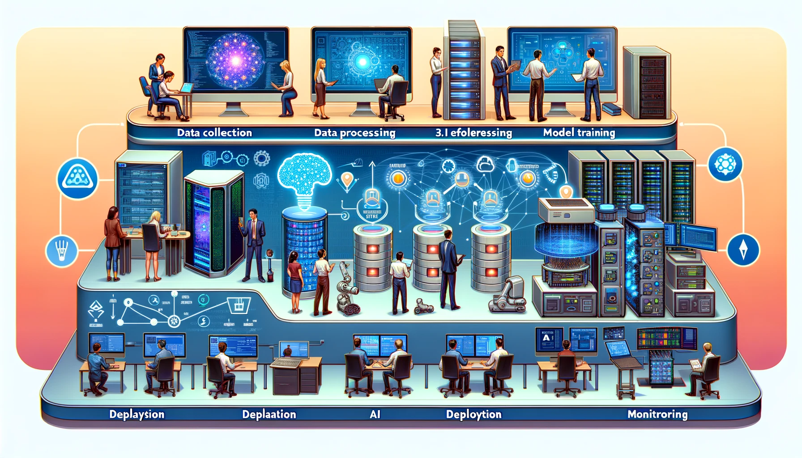

ML Operations
DALL·E 3 Prompt: Create a detailed, wide rectangular illustration of an AI workflow. The image should showcase the process across six stages, with a flow from left to right: 1. Data collection, with diverse individuals of different genders and descents using a variety of devices like laptops, smartphones, and sensors to gather data. 2. Data processing, displaying a data center with active servers and databases with glowing lights. 3. Model training, represented by a computer screen with code, neural network diagrams, and progress indicators. 4. Model evaluation, featuring people examining data analytics on large monitors. 5. Deployment, where the AI is integrated into robotics, mobile apps, and industrial equipment. 6. Monitoring, showing professionals tracking AI performance metrics on dashboards to check for accuracy and concept drift over time. Each stage should be distinctly marked and the style should be clean, sleek, and modern with a dynamic and informative color scheme.

Purpose
Why do machine learning prototypes that work perfectly in development often fail catastrophically when deployed to production environments?
The transition from prototype models to reliable production systems presents significant engineering challenges. Research models trained on clean datasets encounter production environments with shifting data distributions, evolving user behaviors, and unexpected system failures. Unlike traditional software that executes deterministic logic, machine learning systems exhibit probabilistic behavior that degrades silently as real-world conditions diverge from training assumptions. This instability requires operational practices that detect performance degradation before affecting users, automatically retrain models as data evolves, and maintain system reliability despite prediction uncertainty. Success demands engineering disciplines that bridge experimental validation and production reliability, enabling organizations to deploy models that remain effective throughout their operational lifespan.
Differentiate between traditional software failures and ML system silent failures to explain why MLOps emerged as a distinct engineering discipline
Analyze technical debt patterns (boundary erosion, correction cascades, data dependencies) in ML systems and propose systematic engineering solutions
Design CI/CD pipelines that address ML-specific challenges including model validation, data versioning, and automated retraining workflows
Evaluate monitoring strategies for production ML systems that detect both traditional system metrics and ML-specific indicators like data drift and prediction confidence
Implement deployment patterns for diverse environments including cloud services, edge devices, and federated learning systems
Assess organizational maturity levels for effective MLOps implementation
Compare MLOps adaptations across domains by analyzing how specialized requirements (healthcare, embedded systems) reshape operational frameworks
Create governance frameworks that ensure model reproducibility, auditability, and compliance in regulated environments
Introduction to Machine Learning Operations
Traditional software fails loudly with error messages and stack traces; machine learning systems fail silently. As introduced in Chapter 1: Introduction, the Silent Failure Problem is a defining characteristic of ML systems: performance degrades gradually as data distributions shift, user behaviors evolve, and model assumptions become outdated, all without raising any alarms. MLOps is the engineering discipline designed to make those silent failures visible and manageable. It provides the monitoring, automation, and governance required to ensure that data-driven systems remain reliable in production, even as the world around them changes.
Machine learning systems require more than algorithmic innovation; they need systematic engineering practices for reliable production deployment. While Chapter 14: On-Device Learning explored distributed learning under resource constraints and Chapter 16: Robust AI established fault tolerance methodologies, the security framework from Chapter 15: Security & Privacy becomes essential for production deployment. Machine Learning Operations (MLOps)1 provides the disciplinary framework that synthesizes these specialized capabilities into coherent production architectures. This operational discipline addresses the challenge of translating experimental success into sustainable system performance, integrating adaptive learning, security protocols, and resilience mechanisms within complex production ecosystems.
1 MLOps Emergence: While machine learning operations challenges were identified earlier by D. Sculley and colleagues at Google in their influential 2015 paper “Hidden Technical Debt in Machine Learning Systems” (Sculley et al. 2021), the term “MLOps” itself was coined around 2018 as the discipline matured. The field emerged as organizations like Netflix, Uber, and Airbnb faced the “last mile” problem, where approximately 90% of ML models never made it to production according to industry surveys and anecdotal reports due to operational challenges.
MLOps (Section 1.2.2) systematically integrates machine learning methodologies, data science practices, and software engineering principles to enable automated, end-to-end lifecycle management. This operational paradigm bridges experimental validation and production deployment, ensuring that validated models maintain their performance characteristics while adapting to real-world operational environments.
Consider deploying a demand prediction system for ridesharing services. While controlled experimental validation may demonstrate superior accuracy and latency characteristics, production deployment introduces challenges that extend beyond algorithmic performance. Data streams exhibit varying quality, temporal patterns undergo seasonal variations, and prediction services must satisfy strict availability requirements while maintaining real-time response capabilities. MLOps provides the framework needed to address these operational complexities.
As an engineering discipline, MLOps establishes standardized protocols, tools, and workflows that facilitate the transition of validated models from experimental environments to production systems. The discipline promotes collaboration by formalizing interfaces and defining responsibilities across traditionally isolated domains, including data science, machine learning engineering, and systems operations2. This approach enables continuous integration and deployment practices adapted for machine learning contexts, supporting iterative model refinement, validation, and deployment while preserving system stability and operational reliability.
2 DevOps Origins: The “wall of confusion” between development and operations teams was so notorious that Patrick Debois called his 2009 conference “DevOpsDays” specifically to bridge this gap. The movement emerged from the frustrations of the “throw it over the wall” mentality where developers built software in isolation from operations teams who had to deploy and maintain it.
Building on these operational foundations, mature MLOps methodologies transform how organizations manage machine learning systems through automation and monitoring frameworks. These practices enable continuous model retraining as new data becomes available, evaluation of alternative architectures against production baselines, controlled deployment of experimental modifications through graduated rollout strategies, and real-time performance assessment without compromising operational continuity. This operational flexibility ensures sustained model relevance while maintaining system reliability standards.
Beyond operational efficiency, MLOps encompasses governance frameworks and accountability mechanisms that become critical as systems scale. MLOps standardizes the tracking of model versions, data lineage documentation, and configuration parameter management, establishing reproducible and auditable artifact trails. This rigor proves essential in regulated domains where model interpretability and operational provenance constitute compliance requirements.
The practical benefits of this methodological rigor become evident in organizational outcomes. Evidence demonstrates that organizations adopting mature MLOps methodologies achieve significant improvements in deployment reliability, accelerated time-to-market cycles, and enhanced system maintainability3. The disciplinary framework enables sustainable scaling of machine learning systems while preserving the performance characteristics validated during benchmarking phases, ensuring operational fidelity to experimental results.
3 MLOps Business Impact: Companies implementing mature MLOps practices report significant improvements in deployment speed (reducing time from months to weeks), substantial reductions in model debugging time, and improved model reliability. Organizations with mature MLOps practices consistently achieve higher model success rates moving from pilot to production compared to those using ad hoc approaches.
This methodology of machine learning operations provides the pathway for transforming theoretical innovations into sustainable production capabilities. This chapter establishes the engineering foundations needed to bridge the gap between experimentally validated systems and operationally reliable production deployments. The analysis focuses particularly on centralized cloud computing environments, where monitoring infrastructure and management capabilities enable the implementation of mature operational practices for large-scale machine learning systems.
While Chapter 10: Model Optimizations and Chapter 9: Efficient AI establish optimization foundations, this chapter extends these techniques to production contexts requiring continuous maintenance and monitoring. The empirical benchmarking approaches established in Chapter 12: Benchmarking AI provide the methodological foundation for production performance assessment, while system reliability patterns emerge as critical determinants of operational availability. MLOps integrates these diverse technical foundations into unified operational workflows, systematically addressing the fundamental challenge of transitioning from model development to sustainable production deployment.
This chapter examines the theoretical foundations and practical motivations underlying MLOps, traces its disciplinary evolution from DevOps methodologies, and identifies the principal challenges and established practices that inform its adoption in contemporary machine learning system architectures.
Historical Context
Understanding this evolution from DevOps to MLOps clarifies why traditional operational practices require adaptation for machine learning systems. The following examination of this historical development reveals the specific challenges that motivated MLOps as a distinct discipline.
MLOps has its roots in DevOps, a set of practices that combines software development (Dev) and IT operations (Ops) to shorten the development lifecycle and support the continuous delivery of high-quality software. DevOps and MLOps both emphasize automation, collaboration, and iterative improvement. However, while DevOps emerged to address challenges in software deployment and operational management, MLOps evolved in response to the unique complexities of machine learning workflows, especially those involving data-driven components (Breck et al. 2017). Understanding this evolution is important for appreciating the motivations and structure of modern ML systems.
DevOps
The term DevOps was coined in 2009 by Patrick Debois, a consultant and Agile practitioner who organized the first DevOpsDays conference in Ghent, Belgium. DevOps extended the principles of the Agile movement, that emphasized close collaboration among development teams and rapid, iterative releases, by bringing IT operations into the fold.
This innovation addressed a core problem in traditional software pipelines, where development and operations teams worked in silos, creating inefficiencies, delays, and misaligned priorities. DevOps emerged as a response, advocating shared ownership, infrastructure as code4, and automation to streamline deployment pipelines.
4 Infrastructure as Code: The concept emerged from the painful lessons of “snowflake servers”, unique, manually-configured systems that were impossible to reproduce. Luke Kanies created Puppet in 2005 after experiencing the nightmare of managing hundreds of custom-configured servers at various startups.
5 Jenkins Origins: Originally called “Hudson,” Jenkins was created by Kohsuke Kawaguchi at Sun Microsystems in 2004 to automate his own tedious testing processes. The name change to “Jenkins” came in 2011 after a trademark dispute, named after the devoted butler from P.G. Wodehouse’s stories.
6 Kubernetes Origins: Greek for “helmsman,” Kubernetes emerged from Google’s internal Borg system that managed billions of containers across their data centers. Google open-sourced it in 2014, realizing that their competitive advantage wasn’t the orchestration system itself, but how they used it to run services at planetary scale.
7 Containerization and Orchestration: Docker containers package applications with all their dependencies into standardized, portable units that run consistently across different computing environments, isolating software from infrastructure variations. Kubernetes orchestrates these containers at scale, automating deployment, load balancing, scaling, and recovery across clusters of machines. Together, they enable the reproducible, automated infrastructure management essential for modern MLOps, where models and their serving environments must be deployed consistently across development, staging, and production.
To support these principles, tools such as Jenkins5, Docker, and Kubernetes67 became foundational for implementing continuous integration and continuous delivery (CI/CD) practices.
Through automation and feedback loops, DevOps promotes collaboration while reducing time-to-release and improving software reliability. This success established the cultural and technical groundwork for extending similar principles to the ML domain.
MLOps
While DevOps achieved considerable success in traditional software deployment, machine learning systems introduced new challenges that required further adaptation. MLOps builds on the DevOps foundation but addresses the specific demands of ML system development and deployment. Where DevOps focuses on integrating and delivering deterministic software, MLOps must manage non-deterministic, data-dependent workflows. These workflows span data acquisition, preprocessing, model training, evaluation, deployment, and continuous monitoring (see Figure 1).
The operational complexity and business risk of deploying machine learning without systematic engineering practices becomes clear when examining real-world failures. Consider a retail company that deployed a recommendation model that initially boosted sales by 15%. However, due to a silent data drift issue, the model’s accuracy degraded over six months, eventually reducing sales by 5% compared to the original system. The problem went undetected because monitoring focused on system uptime rather than model performance metrics. The company lost an estimated $10 million in revenue before the issue was discovered during routine quarterly analysis. This scenario, common in early ML deployments, illustrates why MLOps, with its emphasis on continuous model monitoring and automated retraining, is not merely an engineering best practice, but a business necessity for organizations depending on machine learning systems for critical operations.
This adaptation was driven by several recurring challenges in operationalizing machine learning that distinguished it from traditional software deployment. Data drift8, where shifts in input data distributions over time degrade model accuracy, requires continuous monitoring and automated retraining procedures.
8 Data Drift Discovery: The concept was first formalized by researchers studying spam detection systems in the early 2000s, who noticed that spam patterns evolved so rapidly that models became obsolete within weeks. This led to the realization that ML systems face a different challenge than traditional software: their environment actively adapts to defeat them.
9 ML Reproducibility Crisis: A 2016 study by Collberg and Proebsting found that only 54% of computer systems research papers could be reproduced even when authors were available to assist (Collberg and Proebsting 2016). This reproducibility challenge is even more acute in ML research, though the situation has improved with initiatives like Papers with Code and requirements for code submission at major ML conferences.
Building on this data-centric challenge, reproducibility9 presents another issue. ML workflows lack standardized mechanisms to track code, datasets, configurations, and environments, making it difficult to reproduce past experiments (Schelter et al. 2018). The lack of explainability in complex models has driven demand for tools that increase model transparency and interpretability, particularly in regulated domains.
{kind=link}
Beyond these foundational challenges, organizations face additional operational complexities. Post-deployment monitoring of model performance proves difficult, especially in detecting silent failures or changes in user behavior. The manual overhead involved in retraining and redeploying models creates friction in experimentation and iteration. Configuring and maintaining ML infrastructure is complex and error-prone, highlighting the need for platforms that offer optimized, modular, and reusable infrastructure. Together, these challenges form the foundation for MLOps practices that focus on automation, collaboration, and lifecycle management.
In response to these distinct challenges, the field developed specialized tools and workflows tailored to the ML lifecycle. Building on DevOps foundations while addressing ML-specific requirements, MLOps coordinates a broader stakeholder ecosystem and introduces specialized practices such as data versioning10, model versioning, and model monitoring that extend beyond traditional DevOps scope. These practices are detailed in Table 1:
10 DVC Creation Story: Data Version Control was born from the frustration of Dmitry Petrov, who spent weeks trying to reproduce an experiment only to discover the training data had been quietly updated. He created DVC in 2017 to bring Git-like versioning to data science, solving what he called “the biggest unsolved problem in machine learning.”
| Aspect | DevOps | MLOps |
|---|---|---|
| Objective | Streamlining software development and operations processes | Optimizing the lifecycle of machine learning models |
| Methodology | Continuous Integration and Continuous Delivery (CI/CD) for software development | Similar to CI/CD but focuses on machine learning workflows |
| Primary Tools | Version control (Git), CI/CD tools (Jenkins, Travis CI), Configuration management (Ansible, Puppet) | Data versioning tools, Model training and deployment tools, CI/CD pipelines tailored for ML |
| Primary Concerns | Code integration, Testing, Release management, Automation, Infrastructure as code | Data management, Model versioning, Experiment tracking, Model deployment, Scalability of ML workflows |
| Typical Outcomes | Faster and more reliable software releases, Improved collaboration between development and operations teams | Efficient management and deployment of machine learning models, Enhanced collaboration between data scientists and engineers |
With these foundational distinctions established, we must first understand the unique operational challenges that motivate sophisticated MLOps practices before examining the infrastructure and practices designed to address them.
Technical Debt and System Complexity
While the DevOps foundation provides automation and collaboration principles, machine learning systems introduce unique forms of complexity that require engineering approaches to manage effectively. Unlike traditional software where broken code fails immediately, ML systems can degrade silently through data changes, model interactions, and evolving requirements. While federated learning systems face unique coordination challenges (Chapter 14: On-Device Learning) and robust systems require careful monitoring (Chapter 16: Robust AI), all deployment contexts must balance operational efficiency with security requirements. Understanding these operational challenges, collectively known as technical debt, is essential for motivating the engineering solutions and practices that follow.
This complexity manifests as machine learning systems mature and scale, where they accumulate technical debt: the long-term cost of expedient design decisions made during development. Originally proposed in software engineering in the 1990s11, this metaphor compares shortcuts in implementation to financial debt: it may enable short-term velocity, but requires ongoing interest payments in the form of maintenance, refactoring, and systemic risk.
11 Technical Debt Origins: Ward Cunningham coined the term in 1992, comparing rushed coding decisions to financial debt: “A little debt speeds development so long as it is paid back promptly with a rewrite.” He later regretted the metaphor became an excuse for bad code rather than a tool for communicating tradeoffs.
{kind=link}
These operational challenges manifest in several distinct patterns that teams encounter as their ML systems evolve. Rather than cataloging every debt pattern, we focus on representative examples that illustrate the engineering approaches MLOps provides. Each challenge emerges from unique characteristics of machine learning workflows: their reliance on data rather than deterministic logic, their statistical rather than exact behavior, and their tendency to create implicit dependencies through data flows rather than explicit interfaces.
The following technical debt patterns demonstrate why traditional DevOps practices require extension for ML systems, motivating the infrastructure solutions presented in subsequent sections.
Building on this systems perspective, we examine key categories of technical debt unique to ML systems (Figure 3). Each subsection highlights common sources, illustrative examples, and engineering solutions that address these challenges. While some forms of debt may be unavoidable during early development, understanding their causes and impact enables engineers to design robust and maintainable ML systems through disciplined architectural practices and appropriate tooling choices.
{kind=link}
Boundary Erosion
In traditional software systems, modularity and abstraction provide clear boundaries between components, allowing changes to be isolated and behavior to remain predictable. Machine learning systems, in contrast, tend to blur these boundaries. The interactions between data pipelines, feature engineering, model training, and downstream consumption often lead to tightly coupled components with poorly defined interfaces.
This erosion of boundaries makes ML systems particularly vulnerable to cascading effects from even minor changes. A seemingly small update to a preprocessing step or feature transformation can propagate through the system in unexpected ways, breaking assumptions made elsewhere in the pipeline. This lack of encapsulation increases the risk of entanglement, where dependencies between components become so intertwined that local modifications require global understanding and coordination.
One manifestation of this problem is known as CACHE (Change Anything Changes Everything). When systems are built without strong boundaries, adjusting a feature encoding, model hyperparameter, or data selection criterion can affect downstream behavior in unpredictable ways. This inhibits iteration and makes testing and validation more complex. For example, changing the binning strategy of a numerical feature may cause a previously tuned model to underperform, triggering retraining and downstream evaluation changes.
To mitigate boundary erosion, teams should prioritize architectural practices that support modularity and encapsulation. Designing components with well-defined interfaces allows teams to isolate faults, reason about changes, and reduce the risk of system-wide regressions. For instance, clearly separating data ingestion from feature engineering, and feature engineering from modeling logic, introduces layers that can be independently validated, monitored, and maintained.
Boundary erosion is often invisible in early development but becomes a significant burden as systems scale or require adaptation. However, established software engineering practices can effectively prevent and mitigate this problem. Proactive design decisions that preserve abstraction and limit interdependencies, combined with systematic testing and interface documentation, provide practical solutions for managing complexity and avoiding long-term maintenance costs.
This challenge arises because ML systems operate with statistical rather than logical guarantees, making traditional software engineering boundaries harder to enforce. Understanding why boundary erosion occurs so frequently requires examining how machine learning workflows differ from conventional software development.
Boundary erosion in ML systems violates established software engineering principles, particularly the Law of Demeter and the principle of least knowledge. While traditional software achieves modularity through explicit interfaces and information hiding, ML systems create implicit couplings through data flows that bypass these explicit boundaries.
The CACHE phenomenon represents a breakdown of the Liskov Substitution Principle, where component modifications violate behavioral contracts expected by dependent components. Unlike traditional software with compile-time guarantees, ML systems operate with statistical behavior that creates inherently different coupling patterns.
The challenge lies in reconciling traditional modularity concepts with the inherently interconnected nature of ML workflows, where statistical dependencies and data-driven behavior create coupling patterns that traditional software engineering frameworks were not designed to handle.
Correction Cascades
As machine learning systems evolve, they often undergo iterative refinement to address performance issues, accommodate new requirements, or adapt to environmental changes. In well-engineered systems, such updates are localized and managed through modular changes. However, in ML systems, even small adjustments can trigger correction cascades, a sequence of dependent fixes that propagate backward and forward through the workflow.
The diagram in Figure 4 visualizes how these cascading effects propagate through ML system development. Understanding the structure of these cascades helps teams anticipate and mitigate their impact.
Figure 4 illustrates how these cascades emerge across different stages of the ML lifecycle, from problem definition and data collection to model development and deployment. Each arc represents a corrective action, and the colors indicate different sources of instability, including inadequate domain expertise, brittle real-world interfaces, misaligned incentives, and insufficient documentation. The red arrows represent cascading revisions, while the dotted arrow at the bottom highlights a full system restart, a drastic but sometimes necessary outcome.

One common source of correction cascades is sequential model development: reusing or fine-tuning existing models to accelerate development for new tasks. While this strategy is often efficient, it can introduce hidden dependencies that are difficult to unwind later. Assumptions baked into earlier models become implicit constraints for future models, limiting flexibility and increasing the cost of downstream corrections.
Consider a scenario where a team fine-tunes a customer churn prediction model for a new product. The original model may embed product-specific behaviors or feature encodings that are not valid in the new setting. As performance issues emerge, teams may attempt to patch the model, only to discover that the true problem lies several layers upstream, perhaps in the original feature selection or labeling criteria.
To avoid or reduce the impact of correction cascades, teams must make careful tradeoffs between reuse and redesign. Several factors influence this decision. For small, static datasets, fine-tuning may be appropriate. For large or rapidly evolving datasets, retraining from scratch provides greater control and adaptability. Fine-tuning also requires fewer computational resources, making it attractive in constrained settings. However, modifying foundational components later becomes extremely costly due to these cascading effects.
Therefore, careful consideration should be given to introducing fresh model architectures, even if resource-intensive, to avoid correction cascades down the line. This approach may help mitigate the amplifying effects of issues downstream and reduce technical debt. However, there are still scenarios where sequential model building makes sense, necessitating a thoughtful balance between efficiency, flexibility, and long-term maintainability in the ML development process.
To understand why correction cascades occur so persistently in ML systems despite best practices, it helps to examine the underlying mechanisms that drive this phenomenon. The correction cascade pattern emerges from hidden feedback loops that violate system modularity principles established in software engineering. When model A’s outputs influence model B’s training data, this creates implicit dependencies that undermine modular design. These dependencies are particularly insidious because they operate through data flows rather than explicit code interfaces, making them invisible to traditional dependency analysis tools.
From a systems theory perspective, correction cascades represent instances of tight coupling between supposedly independent components. The cascade propagation follows power-law distributions, where small initial changes can trigger disproportionately large system-wide modifications. This phenomenon parallels the butterfly effect in complex systems, where minor perturbations amplify through nonlinear interactions.
Understanding these theoretical foundations helps engineers recognize that preventing correction cascades requires not just better tooling, but architectural decisions that preserve system modularity even in the presence of learning components. The challenge lies in designing ML systems that maintain loose coupling despite the inherently interconnected nature of data-driven workflows.
Interface and Dependency Challenges
Unlike traditional software where component interactions occur through explicit APIs, ML systems often develop implicit dependencies through data flows and shared outputs. Two critical patterns illustrate these challenges:
Undeclared Consumers: Model outputs frequently serve downstream components without formal tracking or interface contracts. When models evolve, these hidden dependencies can break silently. For example, a credit scoring model’s outputs might feed an eligibility engine, which influences future applicant pools and training data, creating untracked feedback loops that bias model behavior over time.
Data Dependency Debt: ML pipelines accumulate unstable and underutilized data dependencies that become difficult to trace or validate. Feature engineering scripts, data joins, and labeling conventions lack the dependency analysis tools available in traditional software development. When data sources change structure or distribution, downstream models can fail unexpectedly.
Engineering Solutions: These challenges require systematic approaches including strict access controls for model outputs, formal interface contracts with documented schemas, data versioning and lineage tracking systems, and comprehensive monitoring of prediction usage patterns. The MLOps infrastructure patterns presented in subsequent sections provide concrete implementations of these solutions.
System Evolution Challenges
As ML systems mature, they face unique evolution challenges that differ fundamentally from traditional software:
Feedback Loops: Models influence their own future behavior through the data they generate. Recommendation systems exemplify this: suggested items shape user clicks, which become training data, potentially creating self-reinforcing biases. These loops undermine data independence assumptions and can mask performance degradation for months.
Pipeline and Configuration Debt: ML workflows often evolve into “pipeline jungles” of ad hoc scripts and fragmented configurations. Without modular interfaces, teams build duplicate pipelines rather than refactor brittle ones, leading to inconsistent processing and maintenance burden.
Early-Stage Shortcuts: Rapid prototyping encourages embedding business logic in training code and undocumented configuration changes. While necessary for innovation, these shortcuts become liabilities as systems scale across teams.
Engineering Solutions: Managing evolution requires architectural discipline including cohort-based monitoring for loop detection, modular pipeline design with workflow orchestration tools, and treating configuration as a first-class system component with versioning and validation.
Real-World Technical Debt Examples
Hidden technical debt is not just theoretical; it has played a critical role in shaping the trajectory of real-world machine learning systems. These examples illustrate how unseen dependencies and misaligned assumptions can accumulate quietly, only to become major liabilities over time:
YouTube: Feedback Loop Debt
YouTube’s recommendation engine has faced repeated criticism for promoting sensational or polarizing content12. A large part of this stems from feedback loop debt: recommendations influence user behavior, which in turn becomes training data. Over time, this led to unintended content amplification. Mitigating this required substantial architectural overhauls, including cohort-based evaluation, delayed labeling, and more explicit disentanglement between engagement metrics and ranking logic.
12 YouTube Recommendation Impact: The recommendation system drives 70% of watch time on the platform (1+ billion hours daily), but algorithmic changes in 2016 increased average session time by 50% while inadvertently promoting conspiracy content. Fixing these feedback loops required 2+ years of engineering work and new evaluation frameworks.
Zillow: Correction Cascade Failure
Zillow’s home valuation model (Zestimate) faced significant correction cascades during its iBuying venture13. When initial valuation errors propagated into purchasing decisions, retroactive corrections triggered systemic instability that required data revalidation, model redesign, and eventually a full system rollback. The company shut down the iBuying arm in 2021, citing model unpredictability and data feedback effects as core challenges.
13 Zillow iBuying Failure: Zillow lost $881 million in a single quarter (Q3 2021) due to multiple factors including ML model failures, with the Zestimate algorithm reportedly overvaluing homes by an average of 5-7%. The company laid off 2,000+ employees and took a $569 million inventory write-down when shutting down Zillow Offers.
Tesla: Undeclared Consumer Debt
In early deployments, Tesla’s Autopilot made driving decisions based on models whose outputs were repurposed across subsystems without clear boundaries. Over-the-air updates occasionally introduced silent behavior changes that affected multiple subsystems (e.g., lane centering and braking) in unpredictable ways. This entanglement illustrates undeclared consumer debt and the risks of skipping strict interface governance in ML-enabled safety-critical systems.
Facebook: Configuration Debt
Facebook’s News Feed algorithm has undergone numerous iterations, often driven by rapid experimentation. However, the lack of consistent configuration management led to opaque settings that influenced content ranking without clear documentation. As a result, changes to the algorithm’s behavior were difficult to trace, and unintended consequences emerged from misaligned configurations. This situation highlights the importance of treating configuration as a first-class citizen in ML systems.
These real-world examples demonstrate the pervasive nature of technical debt in ML systems and why traditional DevOps practices require systematic extension. The infrastructure and production operations sections that follow present concrete engineering solutions designed to address these specific challenges: feature stores address data dependency debt, versioning systems enable reproducible configurations, monitoring frameworks detect feedback loops, and modular pipeline architectures prevent technical debt accumulation. This understanding of operational challenges provides the essential motivation for the specialized MLOps tools and practices we examine next.
Development Infrastructure and Automation
Building on the operational challenges established above, this section examines the infrastructure and development components that enable the specialized capabilities from preceding chapters while addressing systemic challenges. These foundational components must support federated learning coordination for edge devices (Chapter 14: On-Device Learning), implement secure model serving with privacy guarantees (Chapter 15: Security & Privacy), and maintain robustness monitoring for distribution shifts (Chapter 16: Robust AI). They form a layered architecture, as illustrated in Figure Figure 5, that integrates these diverse requirements into a cohesive operational framework. Understanding how these components interact enables practitioners to design systems that simultaneously achieve edge efficiency, security compliance, and fault tolerance while maintaining operational sustainability.

Data Infrastructure and Preparation
Reliable machine learning systems depend on structured, scalable, and repeatable handling of data. From the moment data is ingested to the point where it informs predictions, each stage must preserve quality, consistency, and traceability. In operational settings, data infrastructure supports not only initial development but also continual retraining, auditing, and serving, requiring systems that formalize the transformation and versioning of data throughout the ML lifecycle.
Data Management
Building on the data engineering foundations from Chapter 6: Data Engineering, data collection, preprocessing, and feature transformation become formalized into systematic operational processes. Within MLOps, these tasks are scaled into repeatable, automated workflows that ensure data reliability, traceability, and operational efficiency. Data management, in this setting, extends beyond initial preparation to encompass the continuous handling of data artifacts throughout the lifecycle of a machine learning system.
Central to this operational foundation is dataset versioning, which enables reproducible model development by tracking data evolution (see Section 1.4.1.3 for implementation details). Tools such as DVC enable teams to version large datasets alongside code repositories managed by Git, ensuring that data lineage is preserved and that experiments are reproducible.
This versioning foundation enables more sophisticated data management capabilities. Supervised learning pipelines, for instance, require consistent and well-managed annotation workflows. Labeling tools such as Label Studio support scalable, team-based annotation with integrated audit trails and version histories. These capabilities are essential in production settings, where labeling conventions evolve over time or require refinement across multiple iterations of a project.
Beyond annotation workflows, operational environments require data storage that supports secure, scalable, and collaborative access. Cloud-based object storage systems such as Amazon S3 and Google Cloud Storage offer durability and fine-grained access control, making them well-suited for managing both raw and processed data artifacts. These systems frequently serve as the foundation for downstream analytics, model development, and deployment workflows.
Building on this storage foundation, MLOps teams construct automated data pipelines to transition from raw data to analysis- or inference-ready formats. These pipelines perform structured tasks such as data ingestion, schema validation, deduplication, transformation, and loading. Orchestration tools including Apache Airflow, Prefect, and dbt are commonly used to define and manage these workflows. When managed as code, pipelines support versioning, modularity, and integration with CI/CD systems.
As these automated pipelines scale across organizations, they naturally encounter the challenge of feature management at scale. An increasingly important element of modern data infrastructure is the feature store, a concept pioneered by Uber’s Michelangelo platform team in 2017. They coined the term after realizing that feature engineering was being duplicated across hundreds of ML models. Their solution, a centralized “feature store”, became the template that inspired Feast, Tecton, and dozens of other platforms.
Feature stores centralize engineered features for reuse across models and teams (detailed in Section 1.4.1.2).
To illustrate these concepts in practice, consider a predictive maintenance application in an industrial setting. A continuous stream of sensor data is ingested and joined with historical maintenance logs through a scheduled pipeline managed in Airflow. The resulting features, including rolling averages and statistical aggregates, are stored in a feature store for both retraining and low-latency inference. This pipeline is versioned, monitored, and integrated with the model registry, enabling full traceability from data to deployed model predictions.
This comprehensive approach to data management extends far beyond ensuring data quality, establishing the operational backbone that enables model reproducibility, auditability, and sustained deployment at scale. Without robust data management, the integrity of downstream training, evaluation, and serving processes cannot be maintained, making feature stores a critical component of the infrastructure.
Feature Stores
Feature stores14 provide an abstraction layer between data engineering and machine learning. Their primary purpose is to enable consistent, reliable access to engineered features across training and inference workflows. In conventional pipelines, feature engineering logic is duplicated, manually reimplemented, or diverges across environments. This introduces risks of training-serving skew15 (where features differ between training and production), data leakage, and model drift.
14 Feature Store Scale: Uber’s Michelangelo feature store serves 10+ million features per second with P99 latency under 10ms using optimized, co-located serving infrastructure, storing 200+ petabytes of feature data. Airbnb’s feature store supports 1,000+ ML models with automated feature validation preventing 85% of potential training-serving skew issues.
15 Training-Serving Skew Impact: Studies show training-serving skew causes 5-15% accuracy degradation in production models. Google reported that fixing skew issues improved ad click prediction accuracy by 8%, translating to millions in additional revenue annually.
To address these challenges, feature stores manage both offline (batch) and online (real-time) feature access in a centralized repository. This becomes critical when deploying the optimized models discussed in Chapter 10: Model Optimizations, where feature consistency across environments is essential for maintaining model accuracy. During training, features are computed and stored in a batch environment, typically in conjunction with historical labels. At inference time, the same transformation logic is applied to fresh data in an online serving system. This architecture ensures that models consume identical features in both contexts, promoting consistency and improving reliability.
Beyond consistency across training and serving environments, feature stores support versioning, metadata management, and feature reuse across teams. For example, a fraud detection model and a credit scoring model rely on overlapping transaction features, which can be centrally maintained, validated, and shared. This reduces engineering overhead and supports alignment across use cases.
Feature stores can be integrated with data pipelines and model registries, enabling lineage tracking and traceability. When a feature is updated or deprecated, dependent models are identified and retrained accordingly. This integration enhances the operational maturity of ML systems and supports auditing, debugging, and compliance workflows.
Versioning and Lineage
Versioning is essential to reproducibility and traceability in machine learning systems. Unlike traditional software, ML models depend on multiple changing artifacts: training data, feature engineering logic, trained model parameters, and configuration settings. To manage this complexity, MLOps practices enforce tracking of versions across all pipeline components.
At the foundation of this tracking system, data versioning allows teams to snapshot datasets at specific points in time and associate them with particular model runs. This includes both raw data (e.g., input tables or log streams) and processed artifacts (e.g., cleaned datasets or feature sets). By maintaining a direct mapping between model checkpoints and the data used for training, teams can audit decisions, reproduce results, and investigate regressions.
Complementing data versioning, model versioning involves registering trained models as immutable artifacts, alongside metadata such as training parameters, evaluation metrics, and environment specifications. These records are maintained in a model registry, which provides a structured interface for promoting, deploying, and rolling back model versions. Some registries also support lineage visualization, which traces the full dependency graph from raw data to deployed prediction.
These complementary versioning practices together form the lineage layer of an ML system. This layer enables introspection, experimentation, and governance. When a deployed model underperforms, lineage tools help teams answer questions such as:
- Was the input distribution consistent with training data?
- Did the feature definitions change?
- Is the model version aligned with the serving infrastructure?
By elevating versioning and lineage to first-class citizens in the system design, MLOps enables teams to build and maintain reliable, auditable, and evolvable ML workflows at scale.
Continuous Pipelines and Automation
Automation enables machine learning systems to evolve continuously in response to new data, shifting objectives, and operational constraints. Rather than treating development and deployment as isolated phases, automated pipelines allow for synchronized workflows that integrate data preprocessing, training, evaluation, and release. These pipelines underpin scalable experimentation and ensure the repeatability and reliability of model updates in production.
CI/CD Pipelines
While conventional software systems rely on continuous integration and continuous delivery (CI/CD) pipelines to ensure that code changes can be tested, validated, and deployed efficiently, machine learning systems require significant adaptations. In the context of machine learning systems, CI/CD pipelines must handle additional complexities introduced by data dependencies, model training workflows, and artifact versioning. These pipelines provide a structured mechanism to transition ML models from development into production in a reproducible, scalable, and automated manner.
Building on these adapted foundations, a typical ML CI/CD pipeline consists of several coordinated stages, including: checking out updated code, preprocessing input data, training a candidate model, validating its performance, packaging the model, and deploying it to a serving environment. In some cases, pipelines also include triggers for automatic retraining based on data drift or performance degradation. By codifying these steps, CI/CD pipelines16 reduce manual intervention, enforce quality checks, and support continuous improvement of deployed systems.
16 Idempotency in ML Systems: Property where repeated operations produce identical results, crucial for reliable MLOps pipelines. Unlike traditional software where rerunning deployments is guaranteed identical, ML training introduces randomness through data shuffling, weight initialization, and hardware variations. Production MLOps achieves idempotency through fixed random seeds, deterministic data ordering, and consistent compute environments. Without idempotency, debugging becomes impossible when pipeline reruns produce different model artifacts.
17 GitHub Actions for ML: Over 60% of ML teams now use GitHub Actions for CI/CD according to recent developer surveys, with typical ML pipelines taking 15-45 minutes to run (vs. 2-5 minutes for traditional software). Netflix runs 10,000+ ML pipeline executions weekly through GitHub Actions, with 95% success rate on first run.
18 Kubeflow Production Usage: Google’s internal Kubeflow deployment runs 500,000+ ML jobs monthly across 50+ clusters, with automatic resource scaling reducing training costs by 40%. Companies like Spotify use Kubeflow to orchestrate 1,000+ concurrent training jobs with fault tolerance.
To support these complex workflows, a wide range of tools is available for implementing ML-focused CI/CD workflows. General-purpose CI/CD orchestrators such as Jenkins, CircleCI, and GitHub Actions17 manage version control events and execution logic. These tools integrate with domain-specific platforms such as Kubeflow18, Metaflow, and Prefect, which offer higher-level abstractions for managing ML tasks and workflows.
Figure 6 illustrates a representative CI/CD pipeline for machine learning systems. The process begins with a dataset and feature repository, from which data is ingested and validated. Validated data is then transformed for model training. A retraining trigger, such as a scheduled job or performance threshold, initiates this process automatically. Once training and hyperparameter tuning are complete, the resulting model undergoes evaluation against predefined criteria. If the model satisfies the required thresholds, it is registered in a model repository along with metadata, performance metrics, and lineage information. Finally, the model is deployed back into the production system, closing the loop and enabling continuous delivery of updated models.
{kind=link}
To illustrate these concepts in practice, consider an image classification model under active development. When a data scientist commits changes to a GitHub repository, a Jenkins pipeline is triggered. The pipeline fetches the latest data, performs preprocessing, and initiates model training. Experiments are tracked using MLflow, which logs metrics and stores model artifacts. After passing automated evaluation tests, the model is containerized and deployed to a staging environment using Kubernetes. If the model meets validation criteria in staging, the pipeline orchestrates controlled deployment strategies such as canary testing (detailed in Section 1.4.2.3), gradually routing production traffic to the new model while monitoring key metrics for anomalies. In case of performance regressions, the system can automatically revert to a previous model version.
Through these comprehensive automation capabilities, CI/CD pipelines play a central role in enabling scalable, repeatable, and safe deployment of machine learning models. By unifying the disparate stages of the ML workflow under continuous automation, these pipelines support faster iteration, improved reproducibility, and greater resilience in production systems. In mature MLOps environments, CI/CD is not an optional layer, but a foundational capability that transforms ad hoc experimentation into a structured and operationally sound development process.
Training Pipelines
Model training is a central phase in the machine learning lifecycle, where algorithms are optimized to learn patterns from data. Building on the distributed training concepts covered in Chapter 8: AI Training, we examine how training workflows are operationalized through systematic pipelines. Within an MLOps context, these activities are reframed as part of a reproducible, scalable, and automated pipeline that supports continual experimentation and reliable production deployment.
The foundation of operational training lies in modern machine learning frameworks such as TensorFlow, PyTorch, and Keras, which provide modular components for building and training models. The framework selection principles from Chapter 7: AI Frameworks become essential for production training pipelines requiring reliable scaling. These libraries include high-level abstractions for neural network components and training algorithms, enabling practitioners to prototype and iterate efficiently. When embedded into MLOps pipelines, these frameworks serve as the foundation for training processes that can be systematically scaled, tracked, and retrained.
Building on these framework foundations, reproducibility emerges as a key objective of MLOps. Training scripts and configurations are version-controlled using tools like Git and hosted on platforms such as GitHub. Interactive development environments, including Jupyter notebooks, encapsulate data ingestion, feature engineering, training routines, and evaluation logic in a unified format. These notebooks integrate into automated pipelines, allowing the same logic used for local experimentation to be reused for scheduled retraining in production systems.
Beyond ensuring reproducibility, automation further enhances model training by reducing manual effort and standardizing critical steps. MLOps workflows incorporate techniques such as hyperparameter tuning, neural architecture search, and automatic feature selection to explore the design space efficiently. These tasks are orchestrated using CI/CD pipelines, which automate data preprocessing, model training, evaluation, registration, and deployment. For instance, a Jenkins pipeline triggers a retraining job when new labeled data becomes available. The resulting model is evaluated against baseline metrics, and if performance thresholds are met, it is deployed automatically.
Supporting these automated workflows, the increasing availability of cloud-based infrastructure has further expanded the reach of model training. This connects to the workflow orchestration patterns explored in Chapter 5: AI Workflow, which provide the foundation for managing complex, multi-stage training processes across distributed systems. Cloud providers offer managed services that provision high-performance computing resources, which include GPU and TPU accelerators, on demand19. Depending on the platform, teams construct their own training workflows or rely on fully managed services such as Vertex AI Fine Tuning, which support automated adaptation of foundation models to new tasks. Nonetheless, hardware availability, regional access restrictions, and cost constraints remain important considerations when designing cloud-based training systems.
19 Cloud ML Training Economics: Training GPT-3 was estimated to cost approximately $4.6 million on AWS according to Lambda Labs calculations, though official training costs were not disclosed by OpenAI, while fine-tuning typically costs $100-$10,000. Google’s TPU v4 pods can reduce training costs by 2-5\(\times\) compared to equivalent GPU clusters, with some organizations reporting 60-80% cost savings through spot instances and preemptible training.
To illustrate these integrated practices, consider a data scientist developing a neural network for image classification using a PyTorch notebook. The fastai library is used to simplify model construction and training. The notebook trains the model on a labeled dataset, computes performance metrics, and tunes model configuration parameters. Once validated, the training script is version-controlled and incorporated into a retraining pipeline that is periodically triggered based on data updates or model performance monitoring.
Through standardized workflows, versioned environments, and automated orchestration, MLOps enables the model training process to transition from ad hoc experimentation to a robust, repeatable, and scalable system. This not only accelerates development but also ensures that trained models meet production standards for reliability, traceability, and performance.
Model Validation
Before a machine learning model is deployed into production, it must undergo rigorous evaluation to ensure that it meets predefined performance, robustness, and reliability criteria. While earlier chapters discussed evaluation in the context of model development, MLOps reframes evaluation as a structured and repeatable process for validating operational readiness. It incorporates practices that support pre-deployment assessment, post-deployment monitoring, and automated regression testing.
The evaluation process begins with performance testing against a holdout test set, a dataset not used during training or validation. This dataset is sampled from the same distribution as production data and is used to measure generalization. Core metrics such as accuracy, area under the curve (AUC), precision, recall, and F1 score are computed to quantify model performance. These metrics are not only used at a single point in time but also tracked longitudinally to detect degradation, such as that caused by data drift, where shifts in input distributions can reduce model accuracy over time (see Figure 7).
{kind=link}
Beyond static evaluation, MLOps encourages controlled deployment strategies that simulate production conditions while minimizing risk. One widely adopted method is canary testing, in which the new model is deployed to a small fraction of users or queries. During this limited rollout, live performance metrics are monitored to assess system stability and user impact. For instance, an e-commerce platform deploys a new recommendation model to 5% of web traffic and observes metrics such as click-through rate, latency, and prediction accuracy. Only after the model demonstrates consistent and reliable performance is it promoted to full production.
Cloud-based ML platforms further support model evaluation by enabling experiment logging, request replay, and synthetic test case generation. These capabilities allow teams to evaluate different models under identical conditions, facilitating comparisons and root-cause analysis. Tools such as Weights and Biases automate aspects of this process by capturing training artifacts, recording hyperparameter configurations, and visualizing performance metrics across experiments. These tools integrate directly into training and deployment pipelines, improving transparency and traceability.
While automation is central to MLOps evaluation practices, human oversight remains essential. Automated tests may fail to capture nuanced performance issues, such as poor generalization on rare subpopulations or shifts in user behavior. Therefore, teams combine quantitative evaluation with qualitative review, particularly for models deployed in high-stakes or regulated environments. This human-in-the-loop validation becomes especially critical for social impact applications, where model failures can have direct consequences on vulnerable populations.
This multi-stage evaluation process bridges offline testing and live system monitoring, ensuring that models not only meet technical benchmarks but also behave predictably and responsibly under real-world conditions. These evaluation practices reduce deployment risk and help maintain the reliability of machine learning systems over time, completing the development infrastructure foundation necessary for production deployment.
Infrastructure Integration Summary
The infrastructure and development components examined in this section establish the foundation for reliable machine learning operations. These systems transform ad hoc experimentation into structured workflows that support reproducibility, collaboration, and continuous improvement.
Data infrastructure provides the foundation through feature stores that enable feature reuse across projects, versioning systems that track data lineage and evolution, and validation frameworks that ensure data quality throughout the pipeline. Building on the data management foundations from Chapter 6: Data Engineering, these components extend basic capabilities to production contexts where multiple teams and models depend on shared data assets.
Continuous pipelines automate the ML lifecycle through CI/CD systems adapted for machine learning workflows. Unlike traditional software CI/CD that focuses solely on code, ML pipelines orchestrate data validation, feature transformation, model training, and evaluation in integrated workflows. Training pipelines specifically manage the computationally intensive process of model development, coordinating resource allocation, hyperparameter optimization, and experiment tracking. These automated workflows enable teams to iterate rapidly while maintaining reproducibility and quality standards.
Model validation bridges development and production through systematic evaluation that extends beyond offline metrics. Validation strategies combine performance benchmarking on held-out datasets with canary testing in production environments, allowing teams to detect issues before full deployment. This multi-stage validation recognizes that models must perform not just on static test sets but under dynamic real-world conditions where data distributions shift and user behavior evolves.
These infrastructure components directly address the operational challenges identified earlier through systematic engineering capabilities:
- Feature stores and data versioning solve data dependency debt by ensuring consistent, tracked feature access across training and serving
- CI/CD pipelines and model registries prevent correction cascades through controlled deployment and rollback mechanisms
- Automated workflows and lineage tracking eliminate undeclared consumer risks via explicit dependency management
- Modular pipeline architectures avoid pipeline debt through reusable, well-defined component interfaces
However, deploying a validated model represents only the beginning of the production journey. The infrastructure enables reliable model development, but production operations must address the dynamic challenges of maintaining system performance under real-world conditions: handling data drift, managing system failures, and adapting to evolving requirements without service disruption.
Production Operations
Building directly on the infrastructure foundation established above, production operations transform validated models into reliable services that maintain performance under real-world conditions. These operations must handle the diverse requirements established in preceding chapters: managing model updates across distributed edge devices without centralized visibility (Chapter 14: On-Device Learning), maintaining security controls during runtime inference and model updates (Chapter 15: Security & Privacy), and detecting performance degradation from adversarial attacks or distribution shifts (Chapter 16: Robust AI). This operational layer implements monitoring, governance, and deployment strategies that enable these specialized capabilities to function together reliably at scale.
This section explores the deployment patterns, serving infrastructure, monitoring systems, and governance frameworks that transform validated models into production services capable of operating reliably at scale.
Production operations introduce challenges that extend beyond model development. Deployed systems must handle variable loads, maintain consistent latency under diverse conditions, recover gracefully from failures, and adapt to evolving data distributions without disrupting service. These requirements demand specialized infrastructure, monitoring capabilities, and operational practices that complement the development workflows established in the previous section.
Model Deployment and Serving
Once a model has been trained and validated, it must be integrated into a production environment where it can deliver predictions at scale. This process involves packaging the model with its dependencies, managing versions, and deploying it in a way that aligns with performance, reliability, and governance requirements. Deployment transforms a static artifact into a live system component. Serving ensures that the model is accessible, reliable, and efficient in responding to inference requests. Together, these components bridge model development and real-world impact.
Model Deployment
Teams need to properly package, test, and track ML models to reliably deploy them to production. MLOps introduces frameworks and procedures for actively versioning, deploying, monitoring, and updating models in sustainable ways.
One common approach to deployment involves containerizing models using containerization technologies20. This packaging approach ensures smooth portability across environments, making deployment consistent and predictable.
20 Containerization and Orchestration: Docker containers package applications with all their dependencies into standardized, portable units that run consistently across different computing environments, isolating software from infrastructure variations. Kubernetes orchestrates these containers at scale, automating deployment, load balancing, scaling, and recovery across clusters of machines. Together, they enable the reproducible, automated infrastructure management essential for modern MLOps, where models and their serving environments must be deployed consistently across development, staging, and production.
Production deployment requires frameworks that handle model packaging, versioning, and integration with serving infrastructure. Tools like MLflow and model registries manage these deployment artifacts, while serving-specific frameworks (detailed in the Inference Serving section) handle the runtime optimization and scaling requirements.
Before full-scale rollout, teams deploy updated models to staging or QA environments21 to rigorously test performance.
21 TensorFlow Serving Origins: Born from Google’s internal serving system that handled billions of predictions per day for products like Gmail spam detection and YouTube recommendations. Google open-sourced it in 2016 when they realized that productionizing ML models was the bottleneck preventing widespread AI adoption.
22 Canary Deployment History: Named after the canaries miners used to detect toxic gases; if the bird died, miners knew to evacuate immediately. Netflix pioneered this technique for software in 2011, and it became essential for ML where model failures can be subtle and catastrophic.
23 Blue-Green Deployment: Zero-downtime deployment strategy maintaining two identical production environments. One serves traffic (blue) while the other receives updates (green). After validation, traffic switches instantly to green. For ML systems, this enables risk-free model updates since rollback takes <10 seconds vs. hours for model retraining. Spotify uses blue-green deployment for their recommendation models, serving 400+ million users with 99.95% uptime during model updates.
Techniques such as shadow deployments, canary testing22, and blue-green deployment23 are used to validate new models incrementally. As described in our evaluation frameworks, these controlled deployment strategies enable safe model validation in production. Robust rollback procedures are essential to handle unexpected issues, reverting systems to the previous stable model version to ensure minimal disruption.
When canary deployments reveal problems at partial traffic levels (e.g., issues appearing at 30% traffic but not at 5%), teams need systematic debugging strategies. Effective diagnosis requires correlating multiple signals: performance metrics from Chapter 12: Benchmarking AI, data distribution analysis to detect drift, and feature importance shifts that might explain degradation. Teams maintain debug toolkits including A/B test24 analysis frameworks, feature attribution tools, and data slice analyzers that identify which subpopulations are experiencing degraded performance.
24 A/B Testing for ML: Statistical method to compare model performance by splitting traffic between model versions. Netflix runs 1,000+ A/B tests annually on recommendation algorithms, while Uber tests ride pricing models on millions of trips daily to optimize both user experience and revenue. Rollback decisions must balance the severity of degradation against business impact: a 2% accuracy drop might be acceptable during feature launches but unacceptable for safety-critical applications.
Integration with CI/CD pipelines further automates the deployment and rollback process, enabling efficient iteration cycles.
Model registries, such as Vertex AI’s model registry, act as centralized repositories for storing and managing trained models. These registries not only facilitate version comparisons but also often include access to base models, which may be open source, proprietary, or a hybrid (e.g., LLAMA). Deploying a model from the registry to an inference endpoint is streamlined, handling resource provisioning, model weight downloads, and hosting.
Inference endpoints typically expose the deployed model via REST APIs for real-time predictions. Depending on performance requirements, teams can configure resources, such as GPU accelerators, to meet latency and throughput targets. Some providers also offer flexible options like serverless25 or batch inference, eliminating the need for persistent endpoints and enabling cost-efficient, scalable deployments.
25 Serverless Computing for ML: Infrastructure that automatically scales from zero to thousands of instances based on demand, with sub-second cold start times. AWS Lambda can handle 10,000+ concurrent ML inference requests, while Google Cloud Functions supports models up to 32 GB, charging only for actual compute time used. For example, AWS SageMaker Inference supports such configurations.
26 MLflow’s Creation: Built by the team at Databricks who were frustrated watching their customers struggle with ML experiment tracking. They noticed that data scientists were keeping model results in spreadsheets and could never reproduce their best experiments, a problem that inspired MLflow’s “model registry” concept.
To maintain lineage and auditability, teams track model artifacts, including scripts, weights, logs, and metrics, using tools like MLflow26.
By leveraging these tools and practices, teams can deploy ML models resiliently, ensuring smooth transitions between versions, maintaining production stability, and optimizing performance across diverse use cases.
Inference Serving
Once a model has been deployed, the final stage in operationalizing machine learning is to make it accessible to downstream applications or end-users. Serving infrastructure provides the interface between trained models and real-world systems, enabling predictions to be delivered reliably and efficiently. In large-scale settings, such as social media platforms or e-commerce services, serving systems may process tens of trillions of inference queries per day (Wu et al. 2019). The measurement frameworks established in Chapter 12: Benchmarking AI become essential for validating performance claims and establishing production baselines. Meeting such demand requires careful design to balance latency, scalability, and robustness.
27 TensorFlow Serving: Google’s production-grade ML serving system handles over 100,000 queries per second per machine for lightweight models on high-end hardware with <10 ms latency for most models. Originally built to serve YouTube’s recommendation system, processing over 1 billion hours of video watched daily.
28 NVIDIA Triton Inference Server: Can achieve up to 40,000 inferences per second on a single A100 GPU for BERT models, with dynamic batching reducing latency by up to 10\(\times\) compared to naive serving approaches. Supports concurrent execution of up to 100 different model types.
29 KServe (formerly KFServing): Kubernetes-native serving framework that can autoscale from zero to thousands of replicas in under 30 seconds. Used by companies like Bloomberg to serve over 10,000 models simultaneously with 99.9% uptime SLA.
To address these challenges, production-grade serving frameworks have emerged. Tools such as TensorFlow Serving27, NVIDIA Triton Inference Server28, and KServe29 provide standardized mechanisms for deploying, versioning, and scaling machine learning models across heterogeneous infrastructure. These frameworks abstract many of the lower-level concerns, allowing teams to focus on system behavior, integration, and performance targets.
Model serving architectures are typically designed around three broad paradigms:
- Online Serving, which provides low-latency, real-time predictions for interactive systems such as recommendation engines or fraud detection.
- Offline Serving, which processes large batches of data asynchronously, typically in scheduled jobs used for reporting or model retraining.
- Near-Online (Semi-Synchronous) Serving, which offers a balance between latency and throughput, appropriate for scenarios like chatbots or semi-interactive analytics.
Each of these approaches introduces different constraints in terms of availability, responsiveness, and throughput. The efficiency techniques from Chapter 9: Efficient AI become crucial for meeting these performance requirements, particularly when serving models at scale. Serving systems are therefore constructed to meet specific Service Level Agreements (SLAs)30 and Service Level Objectives (SLOs)31, which quantify acceptable performance boundaries along dimensions such as latency, error rates, and uptime. Achieving these goals requires a range of optimizations in request handling, scheduling, and resource allocation.
30 Service Level Agreements (SLAs): Production ML systems typically target 99.9% uptime (8.77 hours downtime/year) for critical services, with penalties of 10-25% monthly service credits for each 0.1% below target. Google’s Cloud AI Platform promises 99.95% uptime with automatic failover in <30 seconds.
31 Service Level Objectives (SLOs): Real-world ML serving SLOs often specify P95 latency <100 ms for online inference, P99 <500 ms, and error rates <0.1%. Netflix’s recommendation system maintains P99 latency under 150 ms while serving 200+ million users, processing 3+ billion hours of content monthly.
A number of serving system design strategies are commonly employed to meet these requirements. Request scheduling and batching aggregate inference requests to improve throughput and hardware utilization. For instance, Clipper (Crankshaw et al. 2017) applies batching and caching to reduce response times in online settings. Model instance selection and routing dynamically assign requests to model variants based on system load or user-defined constraints; INFaaS (Romero et al. 2021) illustrates this approach by optimizing accuracy-latency trade-offs across variant models.
- Request scheduling and batching: Efficiently manages incoming ML inference requests, optimizing performance through smart queuing and grouping strategies. Systems like Clipper (Crankshaw et al. 2017) introduce low-latency online prediction serving with caching and batching techniques.
- Model instance selection and routing: Intelligent algorithms direct requests to appropriate model versions or instances. INFaaS (Romero et al. 2021) explores this by generating model-variants and efficiently exploring the trade-off space based on performance and accuracy requirements.
- Load balancing: Distributes workloads evenly across multiple serving instances. MArk (Model Ark) (C. Zhang et al. 2019) demonstrates effective load balancing techniques for ML serving systems.
- Model instance autoscaling: Dynamically adjusts capacity based on demand. Both INFaaS (Romero et al. 2021) and MArk (C. Zhang et al. 2019) incorporate autoscaling capabilities to handle workload fluctuations efficiently.
- Model orchestration: Manages model execution, enabling parallel processing and strategic resource allocation. AlpaServe (Li et al. 2023) demonstrates advanced techniques for handling large models and complex serving scenarios.
- Execution time prediction: Systems like Clockwork (Gujarati et al. 2020) focus on high-performance serving by predicting execution times of individual inferences and efficiently using hardware accelerators.
In more complex inference scenarios, model orchestration coordinates the execution of multi-stage models or distributed components. AlpaServe (Li et al. 2023) exemplifies this by enabling efficient serving of large foundation models through coordinated resource allocation. Finally, execution time prediction enables systems to anticipate latency for individual requests. Clockwork (Gujarati et al. 2020) uses this capability to reduce tail latency and improve scheduling efficiency under high load.
While these systems differ in implementation, they collectively illustrate the critical techniques that underpin scalable and responsive ML-as-a-Service infrastructure. Table 2 summarizes these strategies and highlights representative systems that implement them.
| Technique | Description | Example System |
|---|---|---|
| Request Scheduling & Batching | Groups inference requests to improve throughput and reduce overhead | Clipper |
| Instance Selection & Routing | Dynamically assigns requests to model variants based on constraints | INFaaS |
| Load Balancing | Distributes traffic across replicas to prevent bottlenecks | MArk |
| Autoscaling | Adjusts model instances to match workload demands | INFaaS, MArk |
| Model Orchestration | Coordinates execution across model components or pipelines | AlpaServe |
| Execution Time Prediction | Forecasts latency to optimize request scheduling | Clockwork |
Together, these strategies form the foundation of robust model serving systems. When effectively integrated, they enable machine learning applications to meet performance targets while maintaining system-level efficiency and scalability.
Edge AI Deployment Patterns
Edge AI represents a major shift in deployment architecture where machine learning inference occurs at or near the data source, rather than in centralized cloud infrastructure. This paradigm addresses critical constraints including latency requirements, bandwidth limitations, privacy concerns, and connectivity constraints that characterize real-world operational environments. According to industry projections, 75% of ML inference will occur at the edge by 2025, making edge deployment patterns essential knowledge for MLOps practitioners (Reddi et al. 2019).
Edge deployment introduces unique operational challenges that distinguish it from traditional cloud-centric MLOps. Resource constraints on edge devices require aggressive model optimization techniques including quantization, pruning, and knowledge distillation to achieve sub-1 MB memory footprints while maintaining acceptable accuracy. Power budgets for edge devices typically range from 10 mW for IoT sensors to 45 W for automotive systems, demanding power-aware inference scheduling and thermal management strategies. Real-time requirements for safety-critical applications necessitate deterministic inference timing with worst-case execution time guarantees under 10 ms for collision avoidance systems and sub-100 ms for interactive robotics applications.
The operational architecture for edge AI systems typically follows hierarchical deployment patterns that distribute intelligence across multiple tiers. Sensor-level processing handles immediate data filtering and feature extraction with microcontroller-class devices consuming 1-100 mW. Edge gateway processing performs intermediate inference tasks using application processors with 1-10 W power budgets. Cloud coordination manages model distribution, aggregated learning, and complex reasoning tasks requiring GPU-class computational resources. This hierarchy enables system-wide optimization where computationally expensive operations migrate to higher tiers while latency-critical decisions remain local.
The most resource-constrained edge AI scenarios involve TinyML deployment patterns, targeting microcontroller-based inference with memory constraints under 1 MB and power consumption measured in milliwatts. TinyML deployment requires specialized inference engines such as TensorFlow Lite Micro, CMSIS-NN, and hardware-specific optimized libraries that eliminate dynamic memory allocation and minimize computational overhead. Model architectures must be co-designed with hardware constraints, favoring depthwise convolutions, binary neural networks, and pruned models that achieve 90%+ sparsity while maintaining task-specific accuracy requirements.
Mobile AI operations extend this edge deployment paradigm to smartphones and tablets with moderate computational capabilities and strict power efficiency requirements. Mobile deployment leverages hardware acceleration through Neural Processing Units (NPUs), GPU compute shaders, and specialized instruction sets to achieve inference performance targets of 5-50 ms latency with power consumption under 500 mW. Mobile AI operations require sophisticated power management including dynamic frequency scaling, thermal throttling coordination, and background inference scheduling that balances performance against battery life and user experience constraints.
Critical operational capabilities for deployed edge systems include over-the-air model updates, which enable maintenance for systems that cannot be physically accessed. OTA update pipelines must implement secure, verified model distribution that prevents malicious model injection while ensuring update integrity through cryptographic signatures and rollback mechanisms. Edge devices require differential compression techniques that minimize bandwidth usage by transmitting only model parameter changes rather than complete model artifacts. Update scheduling must account for device connectivity patterns, power availability, and operational criticality to prevent update-induced service disruptions.
Production edge AI systems implement real-time constraint management through systematic approaches to deadline analysis and resource allocation. Worst-case execution time (WCET) analysis ensures that inference operations complete within specified timing bounds even under adverse conditions including thermal throttling, memory contention, and interrupt service routines. Resource reservation mechanisms guarantee computational bandwidth for safety-critical inference tasks while enabling best-effort execution of non-critical workloads. Graceful degradation strategies enable systems to maintain essential functionality when resources become constrained by reducing model complexity, inference frequency, or feature completeness.
Edge-cloud coordination patterns enable hybrid deployment architectures that optimize the distribution of inference workloads across computational tiers. Adaptive offloading strategies dynamically route inference requests between edge and cloud resources based on current system load, network conditions, and latency requirements. Feature caching at edge gateways reduces redundant computation by storing frequently accessed intermediate representations while maintaining data freshness through cache invalidation policies. Federated learning coordination enables edge devices to contribute to model improvement without transmitting raw data, addressing privacy constraints while maintaining system-wide learning capabilities.
The operational complexity of edge AI deployment requires specialized monitoring and debugging approaches adapted to resource-constrained environments. Lightweight telemetry systems capture essential performance metrics including inference latency, power consumption, and accuracy indicators while minimizing overhead on edge devices. Remote debugging capabilities enable engineers to diagnose deployed systems through secure channels that preserve privacy while providing sufficient visibility into system behavior. Health monitoring systems track device-level conditions including thermal status, battery levels, and connectivity quality to predict maintenance requirements and prevent catastrophic failures.
Resource constraint analysis underpins successful edge AI deployment by systematically modeling the trade-offs between computational capability, power consumption, memory utilization, and inference accuracy. Power budgeting frameworks establish operational envelopes that define sustainable workload configurations under varying environmental conditions and usage patterns. Memory optimization hierarchies guide the selection of model compression techniques, from parameter reduction through structural simplification to architectural modifications that reduce computational requirements.
Edge AI deployment represents the operational frontier where MLOps practices must adapt to the physical constraints and distributed complexity of real-world systems. Success requires not only technical expertise in model optimization and embedded systems but also systematic approaches to distributed system management, security, and reliability engineering that ensure deployed systems remain functional across diverse operational environments.
Resource Management and Performance Monitoring
The operational stability of a machine learning system depends on the robustness of its underlying infrastructure. Compute, storage, and networking resources must be provisioned, configured, and scaled to accommodate training workloads, deployment pipelines, and real-time inference. Beyond infrastructure provisioning, effective observability practices ensure that system behavior can be monitored, interpreted, and acted upon as conditions change.
Infrastructure Management
Scalable, resilient infrastructure is a foundational requirement for operationalizing machine learning systems. As models move from experimentation to production, MLOps teams must ensure that the underlying computational resources can support continuous integration, large-scale training, automated deployment, and real-time inference. This requires managing infrastructure not as static hardware, but as a dynamic, programmable, and versioned system.
To achieve this, teams adopt the practice of Infrastructure as Code (IaC), a paradigm that transforms how computing infrastructure is managed. Rather than manually configuring servers, networks, and storage through graphical interfaces or command-line tools, a process prone to human error and difficult to reproduce, IaC treats infrastructure configuration as software code. This code describes the desired state of infrastructure resources in text files that are version-controlled, reviewed, and automatically executed. Just as software developers write code to define application behavior, infrastructure engineers write code to define computing environments. This transformation brings software engineering best practices to infrastructure management: changes are tracked through version control, configurations can be tested before deployment, and entire environments can be reliably reproduced from their code definitions.
Tools such as Terraform, AWS CloudFormation, and Ansible support this paradigm by enabling teams to version infrastructure definitions alongside application code. In MLOps settings, Terraform is widely used to provision and manage resources across public cloud platforms such as AWS, Google Cloud Platform, and Microsoft Azure.
Infrastructure management spans the full lifecycle of ML systems. During model training, teams use IaC scripts to allocate compute instances with GPU or TPU accelerators, configure distributed storage, and deploy container clusters. These configurations ensure that data scientists and ML engineers access reproducible environments with the required computational capacity. Because infrastructure definitions are stored as code, they are audited, reused, and integrated into CI/CD pipelines to ensure consistency across environments.
Containerization plays a critical role in making ML workloads portable and consistent. Tools like Docker encapsulate models and their dependencies into isolated units, while orchestration systems such as Kubernetes manage containerized workloads across clusters. These systems enable rapid deployment, resource allocation, and scaling, capabilities that are essential in production environments where workloads can vary dynamically.
To handle changes in workload intensity, including spikes during hyperparameter tuning and surges in prediction traffic, teams rely on cloud elasticity and autoscaling32. Cloud platforms support on-demand provisioning and horizontal scaling of infrastructure resources. Autoscaling mechanisms automatically adjust compute capacity based on usage metrics, enabling teams to optimize for both performance and cost-efficiency.
32 ML Autoscaling at Scale: Kubernetes-based ML serving can scale from 1 to 1,000+ replicas in under 60 seconds. Uber’s ML platform automatically scales 2,000+ models daily, reducing infrastructure costs by 35-50% through intelligent resource allocation and cold-start optimization achieving 99.95% availability.
Infrastructure in MLOps is not limited to the cloud. Many deployments span on-premises, cloud, and edge environments, depending on latency, privacy, or regulatory constraints. A robust infrastructure management strategy must accommodate this diversity by offering flexible deployment targets and consistent configuration management across environments.
To illustrate, consider a scenario in which a team uses Terraform to deploy a Kubernetes cluster on Google Cloud Platform. The cluster is configured to host containerized TensorFlow models that serve predictions via HTTP APIs. As user demand increases, Kubernetes automatically scales the number of pods to handle the load. Meanwhile, CI/CD pipelines update the model containers based on retraining cycles, and monitoring tools track cluster performance, latency, and resource utilization. All infrastructure components, ranging from network configurations to compute quotas, are managed as version-controlled code, ensuring reproducibility and auditability.
By adopting Infrastructure as Code, leveraging cloud-native orchestration, and supporting automated scaling, MLOps teams gain the ability to provision and maintain the resources required for machine learning at production scale. This infrastructure layer underpins the entire MLOps stack, enabling reliable training, deployment, and serving workflows.
While these foundational capabilities address infrastructure provisioning and management, the operational reality of ML systems introduces unique resource optimization challenges that extend beyond traditional web service scaling patterns. Infrastructure resource management in MLOps becomes a multi-dimensional optimization problem, requiring teams to balance competing objectives: computational cost, model accuracy, inference latency, and training throughput.
ML workloads exhibit different resource consumption patterns compared to stateless web applications. Training workloads demonstrate bursty resource requirements, scaling from zero to thousands of GPUs during model development phases, then returning to minimal consumption during validation periods. This creates a tension between resource utilization efficiency and time-to-insight that traditional scaling approaches cannot adequately address. Conversely, inference workloads present steady resource consumption patterns with strict latency requirements that must be maintained under variable traffic patterns.
The optimization challenge intensifies when considering the interdependencies between training frequency, model complexity, and serving infrastructure costs. Effective resource management requires holistic approaches that model the entire system rather than optimizing individual components in isolation, taking into account factors such as data pipeline throughput, model retraining schedules, and serving capacity planning.
Hardware-aware resource optimization emerges as a critical operational discipline that bridges infrastructure efficiency with model performance. Production MLOps teams must establish utilization targets that balance cost efficiency against operational reliability: GPU utilization should consistently exceed 80% for batch training workloads to justify hardware costs, while serving workloads require sustained utilization above 60% to maintain economically viable inference operations. Memory bandwidth utilization patterns become equally important, as underutilized memory interfaces indicate suboptimal data pipeline configurations that can degrade training throughput by 30-50%.
Operational resource allocation extends beyond simple utilization metrics to encompass power budget management across mixed workloads. Production deployments typically allocate 60-70% of power budgets to training operations during development cycles, reserving 30-40% for sustained inference workloads. This allocation shifts dynamically based on business priorities: recommendation systems might reallocate power toward inference during peak traffic periods, while research environments prioritize training resource availability. Thermal management considerations become operational constraints rather than hardware design concerns, as sustained high-utilization workloads must be scheduled with cooling capacity limitations and thermal throttling thresholds that can impact SLA compliance.
Model and Infrastructure Monitoring
Monitoring is a critical function in MLOps, enabling teams to maintain operational visibility over machine learning systems deployed in production. Once a model is live, it becomes exposed to real-world inputs, evolving data distributions, and shifting user behavior. Without continuous monitoring, it becomes difficult to detect performance degradation, data quality issues, or system failures in a timely manner.
Effective monitoring spans both model behavior and infrastructure performance. On the model side, teams track metrics such as accuracy, precision, recall, and the confusion matrix using live or sampled predictions. By evaluating these metrics over time, they can detect whether the model’s performance remains stable or begins to drift.
Production ML systems face model drift33 (see Section 1.4.2.3 for detailed analysis), which manifests in two main forms:
33 Model Drift Detection: Production systems typically trigger alerts when accuracy drops >5% over 24 hours or >10% over a week. Advanced systems like those at Spotify detect drift within 2-4 hours using statistical tests, with 85% of drift incidents caught before user impact.
- Concept drift34 occurs when the underlying relationship between features and targets evolves. For example, during the COVID-19 pandemic, purchasing behavior shifted dramatically, invalidating many previously accurate recommendation models.
34 COVID-19 ML Impact: E-commerce recommendation systems saw accuracy drops of 15-40% within weeks of lockdowns beginning in March 2020. Amazon reported having to retrain over 1,000 models, while Netflix saw a 25% increase in viewing time that broke their capacity planning models.
- Data drift refers to shifts in the input data distribution itself. In applications such as self-driving cars, this may result from seasonal changes in weather, lighting, or road conditions, all of which affect the model’s inputs.
Beyond these recognized drift patterns lies a more insidious challenge: gradual long-term degradation that evades standard detection thresholds. Unlike sudden distribution shifts that trigger immediate alerts, some models experience performance erosion over months through imperceptible daily changes. For instance, e-commerce recommendation systems may lose 0.05% accuracy daily as user preferences evolve, accumulating to 15% degradation over a year without triggering monthly drift alerts. Seasonal patterns compound this complexity: a model trained in summer may perform well through autumn but fail catastrophically in winter conditions it never observed. Detecting such gradual degradation requires specialized monitoring approaches: establishing performance baselines across multiple time horizons (daily, weekly, quarterly), implementing sliding window comparisons that detect slow trends, and maintaining seasonal performance profiles that account for cyclical patterns. Teams often discover these degradations only through quarterly business reviews when cumulative impact becomes visible, emphasizing the need for multi-timescale monitoring strategies.
In addition to model-level monitoring, infrastructure-level monitoring tracks indicators such as CPU and GPU utilization, memory and disk consumption, network latency, and service availability. These signals help ensure that the system remains performant and responsive under varying load conditions. Hardware-aware monitoring extends these basic metrics to capture resource efficiency patterns critical for operational success: GPU memory bandwidth utilization, power consumption relative to computational output, and thermal envelope adherence across sustained workloads.
Building on the monitoring infrastructure outlined above, production systems must track hardware efficiency metrics that directly impact operational costs and model performance. GPU utilization monitoring should distinguish between compute-bound and memory-bound operations, as identical 90% utilization metrics can represent vastly different operational efficiency depending on bottleneck location. Memory bandwidth monitoring becomes essential for detecting suboptimal data loading patterns that manifest as high GPU utilization with low computational throughput. Power efficiency metrics, measured as operations per watt, enable teams to optimize mixed workload scheduling for both cost and environmental impact.
Thermal monitoring integrates into operational scheduling decisions, particularly for sustained high-utilization deployments where thermal throttling can degrade performance unpredictably. Modern MLOps monitoring dashboards incorporate thermal headroom metrics that guide workload distribution across available hardware, preventing thermal-induced performance degradation that can violate inference latency SLAs. Tools such as Prometheus35, Grafana, and Elastic are widely used to collect, aggregate, and visualize these operational metrics. These tools often integrate into dashboards that offer real-time and historical views of system behavior.
35 Prometheus at Scale: Can ingest 1+ million samples per second per instance, with some deployments monitoring 100,000+ machines. DigitalOcean’s Prometheus setup stores 2+ years of metrics data across 40,000+ time series, with query response times under 100 ms for 95% of requests.
36 Production Alert Thresholds: Typical ML production alerts fire when GPU memory >90%, CPU >85% for >5 minutes, P99 latency \(>2\times\) normal for >10 minutes, or error rates >1% for >60 seconds. Hardware-aware alerting extends these thresholds to include GPU utilization <60% for serving workloads (indicating resource waste), memory bandwidth utilization <40% (suggesting data pipeline bottlenecks), power consumption >110% of budget allocation (thermal risk), and thermal throttling events (immediate performance impact). High-frequency trading firms use microsecond-level alerts, while batch processing systems may use hour-long windows.
Proactive alerting mechanisms are configured to notify teams when anomalies or threshold violations occur36. For example, a sustained drop in model accuracy may trigger an alert to investigate potential drift, prompting retraining with updated data. Similarly, infrastructure alerts can signal memory saturation or degraded network performance, allowing engineers to take corrective action before failures propagate.
Ultimately, robust monitoring enables teams to detect problems before they escalate, maintain high service availability, and preserve the reliability and trustworthiness of machine learning systems. In the absence of such practices, models may silently degrade or systems may fail under load, undermining the effectiveness of the ML pipeline as a whole.
The monitoring systems themselves require resilience planning to prevent operational blind spots. When primary monitoring infrastructure fails, such as Prometheus experiencing downtime or Grafana becoming unavailable, teams risk operating blind during critical periods. Production-grade MLOps implementations therefore maintain redundant monitoring pathways: secondary metric collectors that activate during primary system failures, local logging that persists when centralized systems fail, and heartbeat checks that detect monitoring system outages. Some organizations implement cross-monitoring where separate infrastructure monitors the monitoring systems themselves, ensuring that observation failures trigger immediate alerts through alternative channels such as PagerDuty or direct notifications. This defense-in-depth approach prevents the catastrophic scenario where both models and their monitoring systems fail simultaneously without detection.
The complexity of monitoring resilience increases significantly in distributed deployments. Multi-region ML systems introduce additional coordination challenges that extend beyond simple redundancy. In such environments, monitoring becomes a distributed coordination problem requiring consensus mechanisms for consistent system state assessment. Traditional centralized monitoring assumes a single point of truth, but distributed ML systems must reconcile potentially conflicting observations across data centers.
This distributed monitoring challenge manifests in three critical areas: consensus-based alerting to prevent false positives from network partitions, coordinated circuit breaker states37 to maintain system-wide consistency during failures, and distributed metric aggregation that preserves temporal ordering across regions with variable network latencies. The coordination overhead scales quadratically with the number of monitoring nodes, creating a tension between observability coverage and system complexity.
37 Circuit Breaker Pattern: Automatic failure detection mechanism that prevents cascade failures by “opening” when error rates exceed thresholds (typically 50% over 10 seconds), routing traffic away from failing services. Originally inspired by electrical circuit breakers, the pattern prevents one failing ML model from overwhelming downstream services. Netflix’s Hystrix processes 20+ billion requests daily using circuit breakers, with typical recovery times of 30-60 seconds.
To address these challenges, teams often implement hierarchical monitoring architectures where regional monitors report to global coordinators through eventual consistency models rather than requiring strong consistency for every metric. This approach balances monitoring granularity against the computational cost of maintaining distributed consensus, enabling scalable observability without overwhelming the system with coordination overhead.
Model Governance and Team Coordination
Successful MLOps implementation requires robust governance frameworks and effective collaboration across diverse teams and stakeholders. This section examines the policies, practices, and organizational structures necessary for responsible and effective machine learning operations. We explore model governance principles that ensure transparency and accountability, cross-functional collaboration strategies that bridge technical and business teams, and stakeholder communication approaches that align expectations and facilitate decision-making.
Model Governance
As machine learning systems become increasingly embedded in decision-making processes, governance has emerged as a critical pillar of MLOps. Governance encompasses the policies, practices, and tools that ensure ML models operate transparently, fairly, and in compliance with ethical and regulatory standards. Without proper governance, deployed models may produce biased or opaque decisions, leading to significant legal, reputational, and societal risks. Ethical considerations and bias mitigation techniques provide the foundation for implementing these governance frameworks.
Governance begins during the model development phase, where teams implement techniques to increase transparency and explainability. For example, methods such as SHAP38 and LIME offer post hoc explanations of model predictions by identifying which input features were most influential in a particular decision. These interpretability techniques complement security measures that address how to protect both model integrity and data privacy in production environments. These techniques allow auditors, developers, and non-technical stakeholders to better understand how and why a model behaves the way it does.
38 SHAP in Production: SHAP explanations add 10-500 ms latency per prediction depending on model complexity, making them costly for real-time serving. However, 40% of enterprise ML teams now use SHAP in production, with Microsoft reporting that SHAP analysis helped identify potential bias-related legal exposure worth an estimated $2M in their hiring models.
In addition to interpretability, fairness is a central concern in governance. Bias detection tools analyze model outputs across different demographic groups, including those defined by age, gender, or ethnicity, to identify disparities in performance. For instance, a model used for loan approval must not systematically disadvantage certain populations. MLOps teams employ pre-deployment audits on curated, representative datasets to evaluate fairness, robustness, and overall model behavior before a system is put into production.
Governance also extends into the post-deployment phase. As introduced in the previous section on monitoring, teams must track for concept drift, where the statistical relationships between features and labels evolve over time. Such drift can undermine the fairness or accuracy of a model, particularly if the shift disproportionately affects a specific subgroup. By analyzing logs and user feedback, teams can identify recurring failure modes, unexplained model outputs, or emerging disparities in treatment across user segments.
Supporting this lifecycle approach to governance are platforms and toolkits that integrate governance functions into the broader MLOps stack. For example, Watson OpenScale provides built-in modules for explainability, bias detection, and monitoring. These tools allow governance policies to be encoded as part of automated pipelines, ensuring that checks are consistently applied throughout development, evaluation, and production.
Ultimately, governance focuses on three core objectives: transparency, fairness, and compliance. Transparency ensures that models are interpretable and auditable. Fairness promotes equitable treatment across user groups. Compliance ensures alignment with legal and organizational policies. Embedding governance practices throughout the MLOps lifecycle transforms machine learning from a technical artifact into a trustworthy system capable of serving societal and organizational goals.
Cross-Functional Collaboration
Machine learning systems are developed and maintained by multidisciplinary teams, including data scientists, ML engineers, software developers, infrastructure specialists, product managers, and compliance officers. As these roles span different domains of expertise, effective communication and collaboration are essential to ensure alignment, efficiency, and system reliability. MLOps fosters this cross-functional integration by introducing shared tools, processes, and artifacts that promote transparency and coordination across the machine learning lifecycle.
Collaboration begins with consistent tracking of experiments, model versions, and metadata. Tools such as MLflow provide a structured environment for logging experiments, capturing parameters, recording evaluation metrics, and managing trained models through a centralized registry. This registry serves as a shared reference point for all team members, enabling reproducibility and easing handoff between roles. Integration with version control systems such as GitHub and GitLab further streamlines collaboration by linking code changes with model updates and pipeline triggers.
In addition to tracking infrastructure, teams benefit from platforms that support exploratory collaboration. Weights & Biases is one such platform that allows data scientists to visualize experiment metrics, compare training runs, and share insights with peers. Features such as live dashboards and experiment timelines facilitate discussion and decision-making around model improvements, hyperparameter tuning, or dataset refinements. These collaborative environments reduce friction in model development by making results interpretable and reproducible across the team.
Beyond model tracking, collaboration also depends on shared understanding of data semantics and usage. Establishing common data contexts, by means of glossaries, data dictionaries, schema references, and lineage documentation, ensures that all stakeholders interpret features, labels, and statistics consistently. This is particularly important in large organizations, where data pipelines may evolve independently across teams or departments.
For example, a data scientist working on an anomaly detection model may use Weights & Biases to log experiment results and visualize performance trends. These insights are shared with the broader team to inform feature engineering decisions. Once the model reaches an acceptable performance threshold, it is registered in MLflow along with its metadata and training lineage. This allows an ML engineer to pick up the model for deployment without ambiguity about its provenance or configuration.
By integrating collaborative tools, standardized documentation, and transparent experiment tracking, MLOps removes communication barriers that have traditionally slowed down ML workflows. It enables distributed teams to operate cohesively, accelerating iteration cycles and improving the reliability of deployed systems. However, effective MLOps extends beyond internal team coordination to encompass the broader communication challenges that arise when technical teams interface with business stakeholders.
Stakeholder Communication
Effective MLOps extends beyond technical implementation to encompass the strategic communication challenges that arise when translating complex machine learning realities into business language. Unlike traditional software systems with deterministic behavior, machine learning systems exhibit probabilistic performance, data dependencies, and degradation patterns that stakeholders often find counterintuitive. This communication gap can undermine project success even when technical execution remains sound.
The most common communication challenge emerges from oversimplified improvement requests. Product managers frequently propose directives such as “make the model more accurate” without understanding the underlying trade-offs that govern model performance. Effective MLOps communication reframes these requests by presenting concrete options with explicit costs. For instance, improving accuracy from 85% to 87% might require collecting four times more training data over three weeks while doubling inference latency from 50 ms to 120 ms. By articulating these specific constraints, MLOps practitioners transform vague requests into informed business decisions.
Similarly, translating technical metrics into business impact requires consistent frameworks that connect model performance to operational outcomes. A 5% accuracy improvement appears modest in isolation, but contextualizing this change as “reducing false fraud alerts from 1,000 to 800 daily customer friction incidents” provides actionable business context. When infrastructure changes affect user experience, such as p99 latency degradation from 200 ms to 500 ms potentially causing 15% user abandonment based on conversion analytics, stakeholders can evaluate technical trade-offs against business priorities.
Incident communication presents another critical operational challenge. When models degrade or require rollbacks, maintaining stakeholder trust depends on clear categorization of failure modes. Temporary performance fluctuations represent normal system variation, while data drift indicates planned maintenance requirements, and system failures demand immediate rollback procedures. Establishing regular performance reporting cadences preemptively addresses stakeholder concerns about model reliability and creates shared understanding of acceptable operational boundaries.
Resource justification requires translating technical infrastructure requirements into business value propositions. Rather than requesting “8 A100 GPUs for model training,” effective communication frames investments as “infrastructure to reduce experiment cycle time from 2 weeks to 3 days, enabling 4x faster feature iteration.” Timeline estimation must account for realistic development proportions: data preparation typically consumes 60% of project duration, model development 25%, and deployment monitoring 15%. Communicating these proportions helps stakeholders understand why model training represents only a fraction of total delivery timelines.
Consider a fraud detection team implementing model improvements for a financial services platform. When stakeholders request enhanced accuracy, the team responds with a structured proposal: increasing detection rates from 92% to 94% requires integrating external data sources, extending training duration by two weeks, and accepting 30% higher infrastructure costs. However, this improvement would prevent an estimated $2 million in annual fraud losses while reducing false positive alerts that currently affect 50,000 customers monthly. This communication approach enables informed decision-making by connecting technical capabilities to business outcomes.
Through disciplined stakeholder communication, MLOps practitioners maintain organizational support for machine learning investments while establishing realistic expectations about system capabilities and operational requirements. This communication competency proves as essential as technical expertise for sustaining successful machine learning operations in production environments.
With the infrastructure and production operations framework established, we now examine the organizational structure required to implement these practices effectively.
One common source of correction cascades is sequential model development: reusing or fine-tuning existing models to accelerate development for new tasks. While this strategy is often efficient, it can introduce hidden dependencies that are difficult to unwind later. Assumptions baked into earlier models become implicit constraints for future models, limiting flexibility and increasing the cost of downstream corrections.
Consider a scenario where a team fine-tunes a customer churn prediction model for a new product. The original model may embed product-specific behaviors or feature encodings that are not valid in the new setting. As performance issues emerge, teams may attempt to patch the model, only to discover that the true problem lies several layers upstream, perhaps in the original feature selection or labeling criteria.
To avoid or reduce the impact of correction cascades, teams must make careful tradeoffs between reuse and redesign. Several factors influence this decision. For small, static datasets, fine-tuning may be appropriate. For large or rapidly evolving datasets, retraining from scratch provides greater control and adaptability. Fine-tuning also requires fewer computational resources, making it attractive in constrained settings. However, modifying foundational components later becomes extremely costly due to these cascading effects.
Therefore, careful consideration should be given to introducing fresh model architectures, even if resource-intensive, to avoid correction cascades down the line. This approach may help mitigate the amplifying effects of issues downstream and reduce technical debt. However, there are still scenarios where sequential model building makes sense, necessitating a thoughtful balance between efficiency, flexibility, and long-term maintainability in the ML development process.
To understand why correction cascades occur so persistently in ML systems despite best practices, it helps to examine the underlying mechanisms that drive this phenomenon. The correction cascade pattern emerges from hidden feedback loops that violate system modularity principles established in software engineering. When model A’s outputs influence model B’s training data, this creates implicit dependencies that undermine modular design. These dependencies are particularly insidious because they operate through data flows rather than explicit code interfaces, making them invisible to traditional dependency analysis tools.
From a systems theory perspective, correction cascades represent instances of tight coupling between supposedly independent components. The cascade propagation follows power-law distributions, where small initial changes can trigger disproportionately large system-wide modifications. This phenomenon parallels the butterfly effect in complex systems, where minor perturbations amplify through nonlinear interactions.
Understanding these theoretical foundations helps engineers recognize that preventing correction cascades requires not just better tooling, but architectural decisions that preserve system modularity even in the presence of learning components. The challenge lies in designing ML systems that maintain loose coupling despite the inherently interconnected nature of data-driven workflows.
| Debt Pattern | Primary Cause | Key Symptoms | Mitigation Strategies |
|---|---|---|---|
| Boundary Erosion | Tightly coupled components, unclear interfaces | Changes cascade unpredictably, CACHE principle violations | Enforce modular interfaces, design for encapsulation |
| Correction Cascades | Sequential model dependencies, inherited assumptions | Upstream fixes break downstream systems, escalating revisions | Careful reuse vs. redesign tradeoffs, clear versioning |
| Undeclared Consumers | Informal output sharing, untracked dependencies | Silent breakage from model updates, hidden feedback loops | Strict access controls, formal interface contracts, usage monitoring |
| Data Dependency Debt | Unstable or underutilized data inputs | Model failures from data changes, brittle feature pipelines | Data versioning, lineage tracking, leave-one-out analysis |
| Feedback Loops | Model outputs influence future training data | Self-reinforcing behavior, hidden performance degradation | Cohort-based monitoring, canary deployments, architectural isolation |
| Pipeline Debt | Ad hoc workflows, lack of standard interfaces | Fragile execution, duplication, maintenance burden | Modular design, workflow orchestration tools, shared libraries |
| Configuration Debt | Fragmented settings, poor versioning | Irreproducible results, silent failures, tuning opacity | Version control, validation, structured formats, automation |
| Early-Stage Debt | Rapid prototyping shortcuts, tight code-logic coupling | Inflexibility as systems scale, difficult team collaboration | Flexible foundations, intentional debt tracking, planned refactoring |
Summary
Technical debt in machine learning systems is both pervasive and distinct from debt encountered in traditional software engineering. While the original metaphor of financial debt highlights the tradeoff between speed and long-term cost, the analogy falls short in capturing the full complexity of ML systems. In machine learning, debt often arises not only from code shortcuts but also from entangled data dependencies, poorly understood feedback loops, fragile pipelines, and configuration sprawl. Unlike financial debt, which can be explicitly quantified, ML technical debt is largely hidden, emerging only as systems scale, evolve, or fail.
This chapter has outlined several forms of ML-specific technical debt, each rooted in different aspects of the system lifecycle. Boundary erosion undermines modularity and makes systems difficult to reason about. Correction cascades illustrate how local fixes can ripple through a tightly coupled workflow. Undeclared consumers and feedback loops introduce invisible dependencies that challenge traceability and reproducibility. Data and configuration debt reflect the fragility of inputs and parameters that are poorly managed, while pipeline and change adaptation debt expose the risks of inflexible architectures. Early-stage debt reminds us that even in the exploratory phase, decisions should be made with an eye toward future extensibility.
The common thread across all these debt types is the need for systematic engineering approaches and system-level thinking. ML systems are not just code; they are evolving ecosystems of data, models, infrastructure, and teams that can be effectively managed through disciplined engineering practices. Managing technical debt requires architectural discipline, robust tooling, and a culture that values maintainability alongside innovation. It also requires engineering judgment: recognizing when debt is strategic and ensuring it is tracked and addressed before it becomes entrenched.
As machine learning becomes increasingly central to production systems, engineering teams can successfully address these challenges through the systematic practices, infrastructure components, and organizational structures detailed in this chapter. Understanding and addressing hidden technical debt not only improves reliability and scalability, but also empowers teams to iterate faster, collaborate more effectively, and sustain the long-term evolution of their systems through proven engineering methodologies.
However, implementing these systematic practices and infrastructure components requires more than just technical solutions. It demands coordinated contributions from professionals with diverse expertise working together effectively.
Roles and Responsibilities
The operational frameworks, infrastructure components, and governance practices examined in the previous sections depend fundamentally on coordinated contributions from professionals with diverse technical and organizational expertise. Unlike traditional software engineering workflows, machine learning introduces additional complexity through its reliance on dynamic data, iterative experimentation, and probabilistic model behavior. As a result, no single role can independently manage the end-to-end machine learning lifecycle. Figure 8 provides a high level overview of how these roles relate to each other.
{kind=link}
Following the MLOps principles established in Section 1.2.2, these specialized roles align around a shared objective: delivering reliable, scalable, and maintainable machine learning systems in production environments. From designing robust data pipelines to deploying and monitoring models in live systems, effective collaboration depends on the disciplinary coordination that MLOps facilitates across data engineering, statistical modeling, software development, infrastructure management, and project coordination.
Roles
Table 4 introduces the key roles that participate in MLOps and outlines their primary responsibilities. Understanding these roles not only clarifies the scope of skills required to support production ML systems but also helps frame the collaborative workflows and handoffs that drive the operational success of machine learning at scale.
| Role | Primary Focus | Core Responsibilities Summary | MLOps Lifecycle Alignment |
|---|---|---|---|
| Data Engineer | Data preparation and infrastructure | Build and maintain pipelines; ensure quality, structure, and lineage of data | Data ingestion, transformation |
| Data Scientist | Model development and experimentation | Formulate tasks; build and evaluate models; iterate using feedback and error analysis | Modeling and evaluation |
| ML Engineer | Production integration and scalability | Operationalize models; implement serving logic; manage performance and retraining | Deployment and inference |
| DevOps Engineer | Infrastructure orchestration and automation | Manage compute infrastructure; implement CI/CD; monitor systems and workflows | Training, deployment, monitoring |
| Project Manager | Coordination and delivery oversight | Align goals; manage schedules and milestones; enable cross-team execution | Planning and integration |
| Responsible AI | Ethics, fairness, and governance | Monitor bias and fairness; enforce transparency and | Evaluation and governance |
| Lead | compliance standards | ||
| Security & Privacy | System protection and data integrity | Secure data and models; implement privacy controls; | Data handling and compliance |
| Engineer | ensure system resilience |
Data Engineers
Data engineers are responsible for constructing and maintaining the data infrastructure that underpins machine learning systems. Their primary focus is to ensure that data is reliably collected, processed, and made accessible in formats suitable for analysis, feature extraction, model training, and inference. In the context of MLOps, data engineers play a foundational role by building the data infrastructure components discussed earlier, including feature stores, data versioning systems, and validation frameworks, that enable scalable and reproducible data pipelines supporting the end-to-end machine learning lifecycle.
A core responsibility of data engineers is data ingestion: extracting data from diverse operational sources such as transactional databases, web applications, log streams, and sensors. This data is typically transferred to centralized storage systems, such as cloud-based object stores (e.g., Amazon S3, Google Cloud Storage), which provide scalable and durable repositories for both raw and processed datasets. These ingestion workflows are orchestrated using scheduling and workflow tools such as Apache Airflow, Prefect, or dbt (Kampakis 2020).
Once ingested, the data must be transformed into structured, analysis-ready formats. This transformation process includes handling missing or malformed values, resolving inconsistencies, performing joins across heterogeneous sources, and computing derived attributes required for downstream tasks. Data engineers implement these transformations through modular pipelines that are version-controlled and designed for fault tolerance and reusability. Structured outputs are often loaded into cloud-based data warehouses such as Snowflake, Redshift, or BigQuery, or stored in feature stores for use in machine learning applications.
In addition to managing data pipelines, data engineers are responsible for provisioning and optimizing the infrastructure that supports data-intensive workflows. This includes configuring distributed storage systems, managing compute clusters, and maintaining metadata catalogs that document data schemas, lineage, and access controls. To ensure reproducibility and governance, data engineers implement dataset versioning, maintain historical snapshots, and enforce data retention and auditing policies.
For example, in a manufacturing application, data engineers may construct an Airflow pipeline that ingests time-series sensor data from programmable logic controllers (PLCs)39 on the factory floor.
39 Programmable Logic Controllers (PLCs): Industrial computers designed to control manufacturing processes, machines, and assembly lines. PLCs process thousands of sensor inputs per second with microsecond-level timing precision, forming the backbone of automated manufacturing systems worth over $80 billion globally.
The raw data is cleaned, joined with product metadata, and aggregated into statistical features such as rolling averages and thresholds. The processed features are stored in a Snowflake data warehouse, where they are consumed by downstream modeling and inference workflows.
Through their design and maintenance of robust data infrastructure, data engineers enable the consistent and efficient delivery of high-quality data. Their contributions ensure that machine learning systems are built on reliable inputs, supporting reproducibility, scalability, and operational stability across the MLOps pipeline.
To illustrate this responsibility in practice, Listing 1 shows a simplified example of a daily Extract-Transform-Load (ETL) pipeline implemented using Apache Airflow. This workflow automates the ingestion and transformation of raw sensor data, preparing it for downstream machine learning tasks.
# Airflow DAG for daily ETL from a manufacturing data source
from airflow import DAG
from airflow.operators.python import PythonOperator
from datetime import datetime
def extract_data():
import pandas as pd
df = pd.read_csv("/data/raw/plc_logs.csv")
# Simulated PLC data
df.to_parquet("/data/staged/sensor_data.parquet")
def transform_data():
import pandas as pd
df = pd.read_parquet("/data/staged/sensor_data.parquet")
df["rolling_avg"] = df["temperature"].rolling(window=10).mean()
df.to_parquet("/data/processed/features.parquet")
with DAG(
dag_id="manufacturing_etl_pipeline",
schedule_interval="@daily",
start_date=datetime(2023, 1, 1),
catchup=False,
) as dag:
extract = PythonOperator(
task_id="extract", python_callable=extract_data
)
transform = PythonOperator(
task_id="transform", python_callable=transform_data
)
extract >> transformData Scientists
Data scientists are responsible for designing, developing, and evaluating machine learning models. Their role centers on transforming business or operational problems into formal learning tasks, selecting appropriate algorithms, and optimizing model performance through statistical and computational techniques. Within the MLOps lifecycle, data scientists operate at the intersection of exploratory analysis and model development, contributing directly to the creation of predictive or decision-making capabilities.
The process typically begins by collaborating with stakeholders to define the problem space and establish success criteria. This includes formulating the task in machine learning terms, including classification, regression, or forecasting, and identifying suitable evaluation metrics to quantify model performance. These metrics, such as accuracy, precision, recall, area under the curve (AUC), or F1 score, provide objective measures for comparing model alternatives and guiding iterative improvements (Rainio, Teuho, and Klén 2024).
Data scientists conduct exploratory data analysis (EDA) to assess data quality, identify patterns, and uncover relationships that inform feature selection and engineering. This stage may involve statistical summaries, visualizations, and hypothesis testing to evaluate the data’s suitability for modeling. Based on these findings, relevant features are constructed or selected in collaboration with data engineers to ensure consistency across development and deployment environments.
Model development involves selecting appropriate learning algorithms and constructing architectures suited to the task and data characteristics. Data scientists employ machine learning libraries such as TensorFlow, PyTorch, or scikit-learn to implement and train models. Hyperparameter tuning, regularization strategies, and cross-validation are used to optimize performance on validation datasets while mitigating overfitting. Throughout this process, tools for experiment tracking, including MLflow and Weights & Biases, are often used to log configuration settings, evaluation results, and model artifacts.
Once a candidate model demonstrates acceptable performance, it undergoes validation through testing on holdout datasets. In addition to aggregate performance metrics, data scientists perform error analysis to identify failure modes, outliers, or biases that may impact model reliability or fairness. These insights often motivate iterations on data processing, feature engineering, or model refinement.
Data scientists also participate in post-deployment monitoring and retraining workflows. They assist in analyzing data drift, interpreting shifts in model performance, and incorporating new data to maintain predictive accuracy over time. In collaboration with ML engineers, they define retraining strategies and evaluate the impact of updated models on operational metrics.
For example, in a retail forecasting scenario, a data scientist may develop a sequence model using TensorFlow to predict product demand based on historical sales, product attributes, and seasonal indicators. The model is evaluated using root mean squared error (RMSE) on withheld data, refined through hyperparameter tuning, and handed off to ML engineers for deployment. Following deployment, the data scientist continues to monitor model accuracy and guides retraining using new transactional data.
Through experimentation and model development, data scientists contribute the core analytical functionality of machine learning systems. Their work transforms raw data into predictive insights and supports the continuous improvement of deployed models through evaluation and refinement.
To illustrate these responsibilities in a practical context, Listing 2 presents a minimal example of a sequence model built using TensorFlow. This model is designed to forecast product demand based on historical sales patterns and other input features.
# TensorFlow model for demand forecasting
import tensorflow as tf
from tensorflow.keras import layers, models
model = models.Sequential(
[
layers.Input(shape=(30, 5)),
# 30 time steps, 5 features
layers.LSTM(64),
layers.Dense(1),
]
)
model.compile(optimizer="adam", loss="mse", metrics=["mae"])
# Assume X_train, y_train are preloaded
model.fit(X_train, y_train, validation_split=0.2, epochs=10)
# Save model for handoff
model.save("models/demand_forecast_v1")ML Engineers
Machine learning engineers are responsible for translating experimental models into reliable, scalable systems that can be integrated into real-world applications. Positioned at the intersection of data science and software engineering, ML engineers ensure that models developed in research environments can be deployed, monitored, and maintained within production infrastructure. Their work bridges the gap between prototyping and operationalization, enabling machine learning to deliver sustained value in practice.
A core responsibility of ML engineers is to take trained models and encapsulate them within modular, maintainable components. This often involves refactoring code for robustness, implementing model interfaces, and building application programming interfaces (APIs) that expose model predictions to downstream systems. Frameworks such as Flask and FastAPI are commonly used to construct lightweight, RESTful services for model inference. To support portability and environment consistency, models and their dependencies are typically containerized using Docker and managed within orchestration systems like Kubernetes.
ML engineers also oversee the integration of models into continuous pipelines and implement the deployment and serving infrastructure discussed in the production operations section. These pipelines automate the retraining, testing, and deployment of models, ensuring that updated models are validated against performance benchmarks before being promoted to production. Practices such as the canary testing strategies outlined earlier, A/B testing, and staged rollouts allow for gradual transitions and reduce the risk of regressions. In the event of model degradation, rollback procedures are used to restore previously validated versions.
Operational efficiency is another key area of focus. ML engineers apply a range of optimization techniques, including model quantization, pruning, and batch serving, to meet latency, throughput, and cost constraints. In systems that support multiple models, they may implement mechanisms for dynamic model selection or concurrent serving. These optimizations are closely coupled with infrastructure provisioning, which often includes the configuration of GPUs or other specialized accelerators.
Post-deployment, ML engineers play a critical role in monitoring model behavior. They configure telemetry systems40 to track latency, failure rates, and resource usage, and they instrument prediction pipelines with logging and alerting mechanisms.
40 ML Telemetry: Automated collection of operational data from ML systems including model performance metrics, infrastructure utilization, and prediction accuracy. Production ML systems generate 10 GB-1 TB of telemetry daily, enabling real-time drift detection and performance optimization.
In collaboration with data scientists and DevOps engineers, they respond to changes in system behavior, trigger retraining workflows, and ensure that models continue to meet service-level objectives.
For example, consider a financial services application where a data science team has developed a fraud detection model using TensorFlow. An ML engineer packages the model for deployment using TensorFlow Serving, configures a REST API for integration with the transaction pipeline, and sets up a CI/CD pipeline in Jenkins to automate updates. They implement logging and monitoring using Prometheus and Grafana, and configure rollback logic to revert to the prior model version if performance deteriorates. This production infrastructure enables the model to operate continuously and reliably under real-world workloads.
Through their focus on software robustness, deployment automation, and operational monitoring, ML engineers play a critical role in transitioning machine learning models from experimental artifacts into trusted components of production systems. These responsibilities vary significantly by organization size: at startups, ML engineers often span the entire stack from data pipeline development to model deployment, while at large technology companies like Meta or Google, they typically specialize in specific areas such as serving infrastructure or feature engineering. Mid-sized companies often have ML engineers owning end-to-end responsibility for specific model domains (e.g., recommendation systems), balancing breadth and specialization. To illustrate these responsibilities in a practical context, Listing 3 presents a minimal example of a REST API built with FastAPI for serving a trained TensorFlow model. This service exposes model predictions for use in downstream applications.
# FastAPI service to serve a trained TensorFlow model
from fastapi import FastAPI, Request
import tensorflow as tf
import numpy as np
app = FastAPI()
model = tf.keras.models.load_model("models/demand_forecast_v1")
@app.post("/predict")
async def predict(request: Request):
data = await request.json()
input_array = np.array(data["input"]).reshape(1, 30, 5)
prediction = model.predict(input_array)
return {"prediction": float(prediction[0][0])}DevOps Engineers
DevOps engineers are responsible for provisioning, managing, and automating the infrastructure that supports the development, deployment, and monitoring of machine learning systems. Originating from the broader discipline of software engineering, the role of the DevOps engineer in MLOps extends traditional responsibilities to accommodate the specific demands of data- and model-driven workflows. Their expertise in cloud computing, automation pipelines, and infrastructure as code (IaC) enables scalable and reliable machine learning operations.
A central task for DevOps engineers is the configuration and orchestration of compute infrastructure used throughout the ML lifecycle. This includes provisioning virtual machines, storage systems, and accelerators such as GPUs and TPUs using IaC tools like Terraform, AWS CloudFormation, or Ansible. Infrastructure is typically containerized using Docker and managed through orchestration platforms such as Kubernetes, which allow teams to deploy, scale, and monitor workloads across distributed environments.
DevOps engineers design and implement CI/CD pipelines tailored to machine learning workflows. These pipelines automate the retraining, testing, and deployment of models in response to code changes or data updates. Tools such as Jenkins, GitHub Actions, or GitLab CI are used to trigger model workflows, while platforms like MLflow and Kubeflow facilitate experiment tracking, model registration, and artifact versioning. By codifying deployment logic, these pipelines reduce manual effort, increase reproducibility, and enable faster iteration cycles.
Monitoring is another critical area of responsibility. DevOps engineers configure telemetry systems to collect metrics related to both model and infrastructure performance. Tools such as Prometheus, Grafana, and the ELK stack41 (Elasticsearch, Logstash, Kibana) are widely used to build dashboards, set thresholds, and generate alerts.
41 ELK Stack: Elasticsearch (search/analytics engine), Logstash (data processing pipeline), and Kibana (visualization platform). Can process terabytes of logs daily with millisecond search response times. Used by Netflix to analyze 1+ billion events daily and identify system anomalies in real-time.
These systems allow teams to detect anomalies in latency, throughput, resource utilization, or prediction behavior and respond proactively to emerging issues.
To ensure compliance and operational discipline, DevOps engineers also implement governance mechanisms that enforce consistency and traceability. This includes versioning of infrastructure configurations, automated validation of deployment artifacts, and auditing of model updates. In collaboration with ML engineers and data scientists, they enable reproducible and auditable model deployments aligned with organizational and regulatory requirements.
For instance, in a financial services application, a DevOps engineer may configure a Kubernetes cluster on AWS to support both model training and online inference. Using Terraform, the infrastructure is defined as code and versioned alongside the application repository. Jenkins is used to automate the deployment of models registered in MLflow, while Prometheus and Grafana provide real-time monitoring of API latency, resource usage, and container health.
By abstracting and automating the infrastructure that underlies ML workflows, DevOps engineers enable scalable experimentation, robust deployment, and continuous monitoring. Their role ensures that machine learning systems can operate reliably under production constraints, with minimal manual intervention and maximal operational efficiency. To illustrate these responsibilities in a practical context, Listing 4 presents an example of using Terraform to provision a GPU-enabled virtual machine on Google Cloud Platform for model training and inference workloads.
# Terraform configuration for a GCP instance with GPU support
resource "google_compute_instance" "ml_node" {
name = "ml-gpu-node"
machine_type = "n1-standard-8"
zone = "us-central1-a"
boot_disk {
initialize_params {
image = "debian-cloud/debian-11"
}
}
guest_accelerator {
type = "nvidia-tesla-t4"
count = 1
}
metadata_startup_script = <<-EOF
sudo apt-get update
sudo apt-get install -y docker.io
sudo docker run --gpus all -p 8501:8501 tensorflow/serving
EOF
tags = ["ml-serving"]
}Project Managers
Project managers play a critical role in coordinating the activities, resources, and timelines involved in delivering machine learning systems. While they do not typically develop models or write code, project managers are essential to aligning interdisciplinary teams, tracking progress against objectives, and ensuring that MLOps initiatives are completed on schedule and within scope. Their work enables effective collaboration among data scientists, engineers, product stakeholders, and infrastructure teams, translating business goals into actionable technical plans.
At the outset of a project, project managers work with organizational stakeholders to define goals, success metrics, and constraints. This includes clarifying the business objectives of the machine learning system, identifying key deliverables, estimating timelines, and setting performance benchmarks. These definitions serve as the foundation for resource allocation, task planning, and risk assessment throughout the lifecycle of the project.
Once the project is initiated, project managers are responsible for developing and maintaining a detailed execution plan. This plan outlines major phases of work, such as data collection, model development, infrastructure provisioning, deployment, and monitoring. Dependencies between tasks are identified and managed to ensure smooth handoffs between roles, while milestones and checkpoints are used to assess progress and adjust schedules as necessary.
Throughout execution, project managers facilitate coordination across teams. This includes organizing meetings, tracking deliverables, resolving blockers, and escalating issues when necessary. Documentation, progress reports, and status updates are maintained to provide visibility across the organization and ensure that all stakeholders are informed of project developments. Communication is a central function of the role, serving to reduce misalignment and clarify expectations between technical contributors and business decision-makers.
In addition to managing timelines and coordination, project managers oversee the budgeting and resourcing aspects of MLOps initiatives. This may involve evaluating cloud infrastructure costs, negotiating access to compute resources, and ensuring that appropriate personnel are assigned to each phase of the project. By maintaining visibility into both technical and organizational considerations, project managers help align technical execution with strategic priorities.
For example, consider a company seeking to reduce customer churn using a predictive model. The project manager coordinates with data engineers to define data requirements, with data scientists to prototype and evaluate models, with ML engineers to package and deploy the final model, and with DevOps engineers to provision the necessary infrastructure and monitoring tools. The project manager tracks progress through phases such as data pipeline readiness, baseline model evaluation, deployment to staging, and post-deployment monitoring, adjusting the project plan as needed to respond to emerging challenges.
By orchestrating collaboration across diverse roles and managing the complexity inherent in machine learning initiatives, project managers enable MLOps teams to deliver systems that are both technically robust and aligned with organizational goals. Their contributions ensure that the operationalization of machine learning is not only feasible, but repeatable, accountable, and efficient. To illustrate these responsibilities in a practical context, Listing 5 presents a simplified example of a project milestone tracking structure using JSON. This format is commonly used to integrate with tools like JIRA or project dashboards to monitor progress across machine learning initiatives.
{
"project": "Churn Prediction",
"milestones": [
{
"name": "Data Pipeline Ready",
"due": "2025-05-01",
"status": "Complete",
},
{
"name": "Model Baseline",
"due": "2025-05-10",
"status": "In Progress",
},
{
"name": "Staging Deployment",
"due": "2025-05-15",
"status": "Pending",
},
{
"name": "Production Launch",
"due": "2025-05-25",
"status": "Pending",
},
],
"risks": [
{
"issue": "Delayed cloud quota",
"mitigation": "Request early from infra team",
}
],
}Responsible AI Lead
The Responsible AI Lead is tasked with ensuring that machine learning systems operate in ways that are transparent, fair, accountable, and compliant with ethical and regulatory standards. As machine learning is increasingly embedded in socially impactful domains such as healthcare, finance, and education, the need for systematic governance has grown. This role reflects a growing recognition that technical performance alone is insufficient; ML systems must also align with broader societal values.
At the model development stage, Responsible AI Leads support practices that enhance interpretability and transparency. They work with data scientists and ML engineers to assess which features contribute most to model predictions, evaluate whether certain groups are disproportionately affected, and document model behavior through structured reporting mechanisms. Post hoc explanation methods, such as attribution techniques, are often reviewed in collaboration with this role to support downstream accountability.
Another key responsibility is fairness assessment. This involves defining fairness criteria in collaboration with stakeholders, auditing model outputs for performance disparities across demographic groups, and guiding interventions, including reweighting, re-labeling, or constrained optimization, to mitigate potential harms. These assessments are often incorporated into model validation pipelines to ensure that they are systematically enforced before deployment.
In post-deployment settings, Responsible AI Leads help monitor systems for drift, bias amplification, and unanticipated behavior. They may also oversee the creation of documentation artifacts such as model cards or datasheets for datasets, which serve as tools for transparency and reproducibility. In regulated sectors, this role collaborates with legal and compliance teams to meet audit requirements and ensure that deployed models remain aligned with external mandates.
For example, in a hiring recommendation system, a Responsible AI Lead may oversee an audit that compares model outcomes across gender and ethnicity, guiding the team to adjust the training pipeline to reduce disparities while preserving predictive accuracy. They also ensure that decision rationales are documented and reviewable by both technical and non-technical stakeholders.
The integration of ethical review and governance into the ML development process enables the Responsible AI Lead to support systems that are not only technically robust, but also socially responsible and institutionally accountable. To illustrate these responsibilities in a practical context, Listing 6 presents an example of using the Aequitas library to audit a model for group-based disparities. This example evaluates statistical parity across demographic groups to assess potential fairness concerns prior to deployment.
# Fairness audit using Aequitas
from aequitas.group import Group
from aequitas.bias import Bias
# Assume df includes model scores, true labels,
# and a 'gender' attribute
g = Group().get_crosstabs(df)
b = Bias().get_disparity_predefined_groups(
g,
original_df=df,
ref_groups_dict={"gender": "male"},
alpha=0.05,
mask_significant=True,
)
print(
b[
[
"attribute_name",
"attribute_value",
"disparity",
"statistical_parity",
]
]
)Security and Privacy Engineer
The Security and Privacy Engineer is responsible for safeguarding machine learning systems against adversarial threats and privacy risks. As ML systems increasingly rely on sensitive data and are deployed in high-stakes environments, security and privacy become essential dimensions of system reliability. This role brings expertise in both traditional security engineering and ML-specific threat models, ensuring that systems are resilient to attack and compliant with data protection requirements.
At the data level, Security and Privacy Engineers help enforce access control, encryption, and secure handling of training and inference data. They collaborate with data engineers to apply privacy-preserving techniques, such as data anonymization, secure aggregation, or differential privacy, particularly when sensitive personal or proprietary data is used. These mechanisms are designed to reduce the risk of data leakage while retaining the utility needed for model training.
In the modeling phase, this role advises on techniques that improve robustness against adversarial manipulation. This may include detecting poisoning attacks during training, mitigating model inversion or membership inference risks, and evaluating the susceptibility of models to adversarial examples. They also assist in designing model architectures and training strategies that balance performance with safety constraints.
During deployment, Security and Privacy Engineers implement controls to protect the model itself, including endpoint hardening, API rate limiting, and access logging. In settings where models are exposed externally, including public-facing APIs, they may also deploy monitoring systems that detect anomalous access patterns or query-based attacks intended to extract model parameters or training data.
For instance, in a medical diagnosis system trained on patient data, a Security and Privacy Engineer might implement differential privacy during model training and enforce strict access controls on the model’s inference interface. They would also validate that model explanations do not inadvertently expose sensitive information, and monitor post-deployment activity for potential misuse.
Through proactive design and continuous oversight, Security and Privacy Engineers ensure that ML systems uphold confidentiality, integrity, and availability. Their work is especially critical in domains where trust, compliance, and risk mitigation are central to system deployment and long-term operation. To illustrate these responsibilities in a practical context, Listing 7 presents an example of training a model using differential privacy techniques with TensorFlow Privacy. This approach helps protect sensitive information in the training data while preserving model utility.
# Training a differentially private model with
# TensorFlow Privacy
import tensorflow as tf
from tensorflow_privacy.privacy.optimizers.dp_optimizer_keras import (
DPKerasAdamOptimizer,
)
# Define a simple model
model = tf.keras.Sequential(
[
tf.keras.layers.Dense(
64, activation="relu", input_shape=(100,)
),
tf.keras.layers.Dense(10, activation="softmax"),
]
)
# Use a DP-aware optimizer
optimizer = DPKerasAdamOptimizer(
l2_norm_clip=1.0,
noise_multiplier=1.1,
num_microbatches=256,
learning_rate=0.001,
)
model.compile(
optimizer=optimizer,
loss="categorical_crossentropy",
metrics=["accuracy"],
)
# Train model on privatized dataset
model.fit(train_data, train_labels, epochs=10, batch_size=256)Intersections and Handoffs
While each role in MLOps carries distinct responsibilities, the successful deployment and operation of machine learning systems depends on seamless collaboration across functional boundaries. Machine learning workflows are inherently interdependent, with critical handoff points connecting data acquisition, model development, system integration, and operational monitoring. Understanding these intersections is essential for designing processes that are both efficient and resilient.
One of the earliest and most critical intersections occurs between data engineers and data scientists. Data engineers construct and maintain the pipelines that ingest and transform raw data, while data scientists depend on these pipelines to access clean, structured, and well-documented datasets for analysis and modeling. Misalignment at this stage, including undocumented schema changes or inconsistent feature definitions, can lead to downstream errors that compromise model quality or reproducibility.
Once a model is developed, the handoff to ML engineers requires a careful transition from research artifacts to production-ready components. ML engineers must understand the assumptions and requirements of the model to implement appropriate interfaces, optimize runtime performance, and integrate it into the broader application ecosystem. This step often requires iteration, especially when models developed in experimental environments must be adapted to meet latency, throughput, or resource constraints in production.
As models move toward deployment, DevOps engineers play the role in provisioning infrastructure, managing CI/CD pipelines, and instrumenting monitoring systems. Their collaboration with ML engineers ensures that model deployments are automated, repeatable, and observable. They also coordinate with data scientists to define alerts and thresholds that guide performance monitoring and retraining decisions.
Project managers provide the organizational glue across these technical domains. They ensure that handoffs are anticipated, roles are clearly defined, and dependencies are actively managed. In particular, project managers help maintain continuity by documenting assumptions, tracking milestone readiness, and facilitating communication between teams. This coordination reduces friction and enables iterative development cycles that are both agile and accountable.
For example, in a real-time recommendation system, data engineers maintain the data ingestion pipeline and feature store, data scientists iterate on model architectures using historical clickstream data, ML engineers deploy models as containerized microservices42, and DevOps engineers monitor inference latency and availability.
42 Microservices in ML: Architectural pattern where each ML model runs as an independent, loosely-coupled service with its own database and deployment lifecycle. Netflix operates 700+ microservices including 100+ for ML recommendations, enabling independent scaling and faster experimentation cycles.
Each role contributes to a different layer of the stack, but the overall functionality depends on reliable transitions between each phase of the lifecycle. These role interactions illustrate that MLOps is not simply a collection of discrete tasks, but a continuous, collaborative process (Figure 9). Designing for clear handoffs, shared tools, and well-defined interfaces is essential for ensuring that machine learning systems can evolve, scale, and perform reliably over time.

Evolving Roles and Specializations
As machine learning systems mature and organizations adopt MLOps practices at scale, the structure and specialization of roles often evolve. In early-stage environments, individual contributors may take on multiple responsibilities, such as a data scientist who also builds data pipelines or manages model deployment. However, as systems grow in complexity and teams expand, responsibilities tend to become more differentiated, giving rise to new roles and more structured organizational patterns.
One emerging trend is the formation of dedicated ML platform teams, which focus on building shared infrastructure and tooling to support experimentation, deployment, and monitoring across multiple projects. These teams often abstract common workflows, including data versioning, model training orchestration, and CI/CD integration, into reusable components or internal platforms. This approach reduces duplication of effort and accelerates development by enabling application teams to focus on domain-specific problems rather than underlying systems engineering.
In parallel, hybrid roles have emerged to bridge gaps between traditional boundaries. For example, full-stack ML engineers combine expertise in modeling, software engineering, and infrastructure to own the end-to-end deployment of ML models. Similarly, ML enablement roles, including MLOps engineers and applied ML specialists, focus on helping teams adopt best practices, integrate tooling, and scale workflows efficiently. These roles are especially valuable in organizations with diverse teams that vary in ML maturity or technical specialization.
The structure of MLOps teams also varies based on organizational scale, industry, and regulatory requirements. In smaller organizations or startups, teams are often lean and cross-functional, with close collaboration and informal processes. In contrast, larger enterprises may formalize roles and introduce governance frameworks to manage compliance, data security, and model risk. Highly regulated sectors, including finance, healthcare, and defense, often require additional roles focused on validation, auditing, and documentation to meet external reporting obligations.
As Table 5 indicates, the boundaries between roles are not rigid. Effective MLOps practices rely on shared understanding, documentation, and tools that facilitate communication and coordination across teams. Encouraging interdisciplinary fluency, including enabling data scientists to understand deployment workflows and DevOps engineers to interpret model monitoring metrics, enhances organizational agility and resilience.
| Role | Key Intersections | Evolving Patterns and Specializations |
|---|---|---|
| Data Engineer | Works with data scientists to define features and pipelines | Expands into real-time data systems and feature store platforms |
| Data Scientist | Relies on data engineers for clean inputs; collaborates with ML engineers | Takes on model validation, interpretability, and ethical considerations |
| ML Engineer | Receives models from data scientists; works with DevOps to deploy and monitor | Transitions into platform engineering or full-stack ML roles |
| DevOps Engineer | Supports ML engineers with infrastructure, CI/CD, and observability | Evolves into MLOps platform roles; integrates governance and security tooling |
| Project Manager | Coordinates across all roles; tracks progress and communication | Specializes into ML product management as systems scale |
| Responsible AI Lead | Collaborates with data scientists and PMs to evaluate fairness and compliance | Role emerges as systems face regulatory scrutiny or public exposure |
| Security & Privacy | Works with DevOps and ML Engineers to | Role formalizes as privacy regulations |
| Engineer | secure data pipelines and model interfaces | (e.g., GDPR, HIPAA) apply to ML workflows |
As machine learning becomes increasingly central to modern software systems, roles will continue to adapt in response to emerging tools, methodologies, and system architectures. Recognizing the dynamic nature of these responsibilities allows teams to allocate resources effectively, design adaptable workflows, and foster collaboration that is essential for sustained success in production-scale machine learning.
The specialized roles and cross-functional collaboration patterns described above do not emerge in isolation. They evolve alongside the technical and organizational maturity of ML systems themselves. Understanding this co-evolution between roles, infrastructure, and operational practices provides essential context for designing sustainable MLOps implementations.
System Design and Maturity Framework
Building on the infrastructure components, production operations, and organizational roles established earlier, we now examine how these elements integrate into coherent operational systems. Machine learning systems do not operate in isolation. Their effectiveness depends not only on the quality of the underlying models, but also on the maturity of the organizational and technical processes that support them. This section explores how operational maturity shapes system architecture and provides frameworks for designing MLOps implementations that address the operational challenges identified at the chapter’s beginning. Operational maturity refers to the degree to which ML workflows are automated, reproducible, monitored, and aligned with broader engineering and governance practices. While early-stage efforts may rely on ad hoc scripts and manual interventions, production-scale systems require deliberate design choices that support long-term sustainability, reliability, and adaptability. This section examines how different levels of operational maturity influence system architecture, infrastructure design, and organizational structure, providing a lens through which to interpret the broader MLOps landscape (Paleyes, Urma, and Lawrence 2022).
Operational Maturity
Operational maturity in machine learning refers to the extent to which an organization can reliably develop, deploy, and manage ML systems in a repeatable and scalable manner. Unlike the maturity of individual models or algorithms, operational maturity reflects systemic capabilities: how well a team or organization integrates infrastructure, automation, monitoring, governance, and collaboration into the ML lifecycle.
Low-maturity environments often rely on manual workflows, loosely coupled components, and ad hoc experimentation. While sufficient for early-stage research or low-risk applications, such systems tend to be brittle, difficult to reproduce, and highly sensitive to data or code changes. As ML systems are deployed at scale, these limitations quickly become barriers to sustained performance, trust, and accountability.
In contrast, high-maturity environments implement modular, versioned, and automated workflows that allow models to be developed, validated, and deployed in a controlled and observable fashion. Data lineage is preserved across transformations; model behavior is continuously monitored and evaluated; and infrastructure is provisioned and managed as code. These practices reduce operational friction, enable faster iteration, and support robust decision-making in production (A. Chen et al. 2020).
Operational maturity is not solely a function of tool adoption. While technologies such as CI/CD pipelines, model registries, and observability stacks play a role, maturity centers on system integration and coordination: how data engineers, data scientists, and operations teams collaborate through shared interfaces, standardized workflows, and automated handoffs. It is this integration that distinguishes mature ML systems from collections of loosely connected artifacts.
Maturity Levels
While operational maturity exists on a continuum, it is useful to distinguish between broad stages that reflect how ML systems evolve from research prototypes to production-grade infrastructure. These stages are not strict categories, but rather indicative of how organizations gradually adopt practices that support reliability, scalability, and observability.
At the lowest level of maturity, ML workflows are ad hoc: experiments are run manually, models are trained on local machines, and deployment involves hand-crafted scripts or manual intervention. Data pipelines may be fragile or undocumented, and there is limited ability to trace how a deployed model was produced. These environments may be sufficient for prototyping, but they are ill-suited for ongoing maintenance or collaboration.
As maturity increases, workflows become more structured and repeatable. Teams begin to adopt version control, automated training pipelines, and centralized model storage. Monitoring and testing frameworks are introduced, and retraining workflows become more systematic. Systems at this level can support limited scale and iteration but still rely heavily on human coordination.
At the highest levels of maturity, ML systems are fully integrated with infrastructure-as-code, continuous delivery pipelines, and automated monitoring. Data lineage, feature reuse, and model validation are encoded into the development process. Governance is embedded throughout the system, allowing for traceability, auditing, and policy enforcement. These environments support large-scale deployment, rapid experimentation, and adaptation to changing data and system conditions.
This progression, summarized in Table 6, offers a system-level framework for analyzing ML operational practices. It emphasizes architectural cohesion and lifecycle integration over tool selection, guiding the design of scalable and maintainable learning systems.
| Maturity Level | System Characteristics | Typical Outcomes |
|---|---|---|
| Ad Hoc | Manual data processing, local training, no version control, unclear ownership | Fragile workflows, difficult to reproduce or debug |
| Repeatable | Automated training pipelines, basic CI/CD, centralized model storage, some monitoring | Improved reproducibility, limited scalability |
| Scalable | Fully automated workflows, integrated observability, infrastructure-as-code, governance | High reliability, rapid iteration, production-grade ML |
These maturity levels provide a systems lens through which to evaluate ML operations, not in terms of specific tools adopted, but in how reliably and cohesively a system supports the full machine learning lifecycle. Understanding this progression prepares practitioners to identify design bottlenecks and prioritize investments that support long-term system sustainability.
| Maturity Level | System Characteristics | Typical Outcomes |
|---|---|---|
| Ad Hoc | Manual data processing, local training, no version control, unclear ownership | Fragile workflows, difficult to reproduce or debug |
| Repeatable | Automated training pipelines, basic CI/CD, centralized model storage, some monitoring | Improved reproducibility, limited scalability |
| Scalable | Fully automated workflows, integrated observability, infrastructure-as-code, governance | High reliability, rapid iteration, production-grade ML |
System Design Implications
As machine learning operations mature, the underlying system architecture evolves in response. Operational maturity is not just an organizational concern; it has direct consequences for how ML systems are structured, deployed, and maintained. Each level of maturity introduces new expectations around modularity, automation, monitoring, and fault tolerance, shaping the design space in both technical and procedural terms.
In low-maturity environments, ML systems are often constructed around monolithic scripts and tightly coupled components. Data processing logic may be embedded directly within model code, and configurations are managed informally. These architectures, while expedient for rapid experimentation, lack the separation of concerns needed for maintainability, version control, or safe iteration. As a result, teams frequently encounter regressions, silent failures, and inconsistent performance across environments.
As maturity increases, modular abstractions begin to emerge. Feature engineering is decoupled from model logic, pipelines are defined declaratively, and system boundaries are enforced through APIs and orchestration frameworks. These changes support reproducibility and enable teams to scale development across multiple contributors or applications. Infrastructure becomes programmable through configuration files, and model artifacts are promoted through standardized deployment stages. This architectural discipline allows systems to evolve predictably, even as requirements shift or data distributions change.
At high levels of maturity, ML systems exhibit properties commonly found in production-grade software systems: stateless services, contract-driven interfaces, environment isolation, and observable execution. Design patterns such as feature stores, model registries, and infrastructure-as-code become foundational. Crucially, system behavior is not inferred from static assumptions, but monitored in real time and adapted as needed. This enables feedback-driven development and supports closed-loop systems where data, models, and infrastructure co-evolve.
In each case, operational maturity is not an external constraint but an architectural force: it governs how complexity is managed, how change is absorbed, and how the system can scale in the face of threats to service uptime (see Figure 10). Design decisions that disregard these constraints may function under ideal conditions, but fail under real-world pressures such as latency requirements, drift, outages, or regulatory audits. Understanding this relationship between maturity and design is essential for building resilient machine learning systems that sustain performance over time.

Design Patterns and Anti-Patterns
The structure of the teams involved in building and maintaining machine learning systems plays a significant role in determining operational outcomes. As ML systems grow in complexity and scale, organizational patterns must evolve to reflect the interdependence between data, modeling, infrastructure, and governance. While there is no single ideal structure, certain patterns consistently support operational maturity, whereas others tend to hinder it.
In mature environments, organizational design emphasizes clear ownership, cross-functional collaboration, and interface discipline between roles. For instance, platform teams may take responsibility for shared infrastructure, tooling, and CI/CD pipelines, while domain teams focus on model development and business alignment. This separation of concerns enables reuse, standardization, and parallel development. Interfaces between teams, including feature definitions, data schemas, and deployment targets, are well-defined and versioned, reducing friction and ambiguity.
One effective pattern is the creation of a centralized MLOps team that provides shared services to multiple model development groups. This team maintains tooling for model training, validation, deployment, and monitoring, and may operate as an internal platform provider. Such structures promote consistency, reduce duplicated effort, and accelerate onboarding for new projects. Alternatively, some organizations adopt a federated model, embedding MLOps engineers within product teams while maintaining a central architectural function to guide system-wide integration.
In contrast, anti-patterns often emerge when responsibilities are fragmented or poorly aligned. One common failure mode is the tool-first approach, in which teams adopt infrastructure or automation tools without first defining the processes and roles that should govern their use. This can result in fragile pipelines, unclear handoffs, and duplicated effort. Another anti-pattern is siloed experimentation, where data scientists operate in isolation from production engineers, leading to models that are difficult to deploy, monitor, or retrain effectively.
Organizational drift is another subtle challenge. As teams scale, undocumented workflows and informal agreements may become entrenched, increasing the cost of coordination and reducing transparency. Without deliberate system design and process review, even previously functional structures can accumulate technical and organizational debt.
Ultimately, organizational maturity must co-evolve with system complexity. Teams must establish communication patterns, role definitions, and accountability structures that reinforce the principles of modularity, automation, and observability. Operational excellence in machine learning is not just a matter of technical capability; it is the product of coordinated, intentional systems thinking across human and computational boundaries.
The organizational patterns described above must be supported by technical architectures that can handle the unique reliability challenges of ML systems. MLOps inherits many reliability challenges from distributed systems but adds unique complications through learning components. Traditional reliability patterns require adaptation to account for the probabilistic nature of ML systems and the dynamic behavior of learning components.
Circuit breaker patterns must account for model-specific failure modes, where prediction accuracy degradation requires different thresholds than service availability failures. Bulkhead patterns become critical when isolating experimental model versions from production traffic, requiring resource partitioning strategies that prevent resource exhaustion in one model from affecting others. The Byzantine fault tolerance problem takes on new characteristics in MLOps environments, where “Byzantine” behavior includes models producing plausible but incorrect outputs rather than obvious failures.
Traditional consensus algorithms focus on agreement among correct nodes, but ML systems require consensus about model correctness when ground truth may be delayed or unavailable. This necessitates probabilistic agreement protocols that can operate under uncertainty, using techniques from distributed machine learning to aggregate model decisions across replicas while accounting for potential model drift or adversarial inputs. These reliability patterns form the theoretical foundation for operational practices that distinguish robust MLOps implementations from fragile ones.
Contextualizing MLOps
The operational maturity of a machine learning system is not an abstract ideal; it is realized in concrete systems with physical, organizational, and regulatory constraints. While the preceding sections have outlined best practices for mature MLOps, which include CI/CD, monitoring, infrastructure provisioning, and governance, these practices are rarely deployed in pristine, unconstrained environments. In reality, every ML system operates within a specific context that shapes how MLOps workflows are implemented, prioritized, and adapted.
System constraints may arise from the physical environment in which a model is deployed, such as limitations in compute, memory, or power. These are common in edge and embedded systems, where models must run under strict latency and resource constraints. Connectivity limitations, such as intermittent network access or bandwidth caps, further complicate model updates, monitoring, and telemetry collection. In high-assurance domains, including healthcare, finance, and industrial control systems, governance, traceability, and fail-safety may take precedence over throughput or latency. These factors do not simply influence system performance; they alter how MLOps pipelines must be designed and maintained.
For instance, a standard CI/CD pipeline for retraining and deployment may be infeasible in environments where direct access to the model host is not possible. In such cases, teams must implement alternative delivery mechanisms, such as over-the-air updates, that account for reliability, rollback capability, and compatibility across heterogeneous devices. Similarly, monitoring practices that assume full visibility into runtime behavior may need to be reimagined using indirect signals, coarse-grained telemetry, or on-device anomaly detection. Even the simple task of collecting training data may be limited by privacy concerns, device-level storage constraints, or legal restrictions on data movement.
These adaptations should not be interpreted as deviations from maturity, but rather as expressions of maturity under constraint. A well-engineered ML system accounts for the realities of its operating environment and revises its operational practices accordingly. This is the essence of systems thinking in MLOps: applying general principles while designing for specificity.
As we turn to the chapters ahead, we will encounter several of these contextual factors, including on-device learning, privacy preservation, safety and robustness, and sustainability. Each presents not just a technical challenge but a system-level constraint that reshapes how machine learning is practiced and maintained at scale. Understanding MLOps in context is therefore not optional; it is foundational to building ML systems that are viable, trustworthy, and effective in the real world.
Future Operational Considerations
As this chapter has shown, the deployment and maintenance of machine learning systems require more than technical correctness at the model level. They demand architectural coherence, organizational alignment, and operational maturity. The progression from ad hoc experimentation to scalable, auditable systems reflects a broader shift: machine learning is no longer confined to research environments; it is a core component of production infrastructure.
Understanding the maturity of an ML system helps clarify what challenges are likely to emerge and what forms of investment are needed to address them. Early-stage systems benefit from process discipline and modular abstraction; mature systems require automation, governance, and resilience. Design choices made at each stage influence the pace of experimentation, the robustness of deployed models, and the ability to integrate evolving requirements: technical, organizational, and regulatory.
This systems-oriented view of MLOps also sets the stage for the next phase of this book. The specialized operational contexts examined in subsequent chapters, edge computing (Chapter 14: On-Device Learning), adversarial robustness (Chapter 16: Robust AI), and privacy-preserving deployment (Chapter 15: Security & Privacy), each require adaptations of the foundational MLOps principles established here. These topics represent not merely extensions of model performance, but domains in which operational maturity directly enables feasibility, safety, and long-term value.
Operational maturity is therefore not the end of the machine learning system lifecycle; it is the foundation upon which production-grade, responsible, and adaptive systems are built. The following chapters explore what it takes to build such systems under domain-specific constraints, further expanding the scope of what it means to engineer machine learning at scale.
Enterprise-Scale ML Systems
At the highest levels of operational maturity, some organizations are implementing what can be characterized as AI factories. There are specialized computing infrastructures designed to manage the entire AI lifecycle at unprecedented scale. These represent the logical extension of the scalable maturity level discussed earlier, where fully automated workflows, integrated observability, and infrastructure-as-code principles are applied to intelligence manufacturing rather than traditional software delivery.
AI factories emerge when organizations need to optimize not just individual model deployments, but entire AI production pipelines that support multiple concurrent models, diverse inference patterns, and continuous high-volume operations. The computational demands driving this evolution include post-training scaling, where fine-tuning models for specific applications requires significantly more compute during inference than initial training, and test-time scaling, where advanced AI applications employ iterative reasoning that can consume orders of magnitude more computational resources than traditional inference patterns. Unlike traditional data centers designed for general-purpose computing, these systems are specifically architected for AI workloads, emphasizing inference performance, energy efficiency, and the ability to transform raw data into actionable intelligence at scale.
The operational challenges in AI factories extend the principles we have discussed. They require sophisticated resource allocation across heterogeneous workloads, system-level observability that correlates performance across multiple models, and fault tolerance mechanisms that can handle cascading failures across interdependent AI systems. These systems are not merely scaled versions of traditional MLOps deployments, but a qualitatively different approach to managing AI infrastructure that may influence how the field evolves as AI becomes increasingly central to organizational strategy and value creation.
Investment and Return on Investment
While the operational benefits of MLOps are substantial, implementing mature MLOps practices requires significant organizational investment in infrastructure, tooling, and specialized personnel. Understanding the costs and expected returns helps organizations make informed decisions about MLOps adoption and maturity progression.
Building a mature MLOps platform typically represents a multi-year, multi-million dollar investment for enterprise-scale deployments. Organizations must invest in specialized infrastructure including feature stores, model registries, orchestration platforms, and monitoring systems. Additionally, they need dedicated platform teams with expertise spanning data engineering, machine learning, and DevOps, roles that command premium salaries in competitive markets. The initial setup costs for comprehensive MLOps infrastructure often range from $500,000 to $5 million annually, depending on scale and complexity requirements.
However, the return on investment becomes compelling when considering the operational improvements that mature MLOps enables. Organizations with established MLOps practices report reducing model deployment time from months to days or weeks, dramatically accelerating time-to-market for ML-driven products and features. Model failure rates in production decrease from approximately 80% in ad hoc environments to less than 20% in mature MLOps implementations, reducing costly debugging cycles and improving system reliability. Perhaps most significantly, mature MLOps platforms enable organizations to manage hundreds or thousands of models simultaneously, creating economies of scale that justify the initial infrastructure investment.
The ROI calculation must also account for reduced operational overhead and improved team productivity. Automated retraining pipelines eliminate manual effort required for model updates, while standardized deployment processes reduce the specialized knowledge needed for each model release. Feature reuse across teams prevents duplicated engineering effort, and systematic monitoring reduces the time spent diagnosing performance issues. Organizations frequently report 30-50% improvements in data science team productivity after implementing comprehensive MLOps platforms, as teams can focus on model development rather than operational concerns.
Year 1: Foundation building with basic CI/CD, monitoring, and containerization ($1-2 M investment) - Focus on preventing the most costly failures through basic automation - Expected ROI: Reduced failure rates and faster debugging cycles
Year 2-3: Platform maturation with advanced features like automated retraining, sophisticated monitoring, and feature stores ($2-3 M additional investment) - Enables scaling to dozens of concurrent models - Expected ROI: Significant productivity gains and deployment velocity improvements
Year 3+: Optimization and specialization for domain-specific requirements ($500 K-1 M annual maintenance) - Platform supports hundreds of models with minimal incremental effort - Expected ROI: Economies of scale and competitive advantage through ML capabilities
The strategic value of MLOps extends beyond operational efficiency to enable organizational capabilities that would be impossible without systematic engineering practices. Mature MLOps platforms support rapid experimentation, controlled A/B testing of model variations, and real-time adaptation to changing conditions, capabilities that can provide competitive advantages worth far more than the initial investment. Organizations should view MLOps not merely as an operational necessity, but as foundational infrastructure that enables sustained innovation in machine learning applications.
Having established the conceptual frameworks, from operational challenges through infrastructure components, production operations, organizational roles, and maturity models, we now examine how these elements combine in practice. The following case studies demonstrate how the theoretical principles translate into concrete implementation choices, showing both the universal applicability of MLOps concepts and their domain-specific adaptations.
Case Studies
The operational design principles, technical debt patterns, and maturity frameworks examined throughout this chapter come together in real-world implementations that demonstrate their practical importance. These case studies explicitly illustrate how the operational challenges identified earlier, from data dependency debt to feedback loops, manifest in production systems, and how the infrastructure components, monitoring strategies, and cross-functional roles work together to address them.
We examine two cases that represent distinct deployment contexts, each requiring domain-specific adaptations of standard MLOps practices while maintaining the core principles of automated pipelines, cross-functional collaboration, and continuous monitoring. The Oura Ring case study demonstrates how pipeline debt and configuration management challenges play out in resource-constrained edge environments, where traditional MLOps infrastructure must be adapted for embedded systems. The ClinAIOps case study shows how feedback loops and governance requirements drive specialized operational frameworks in healthcare, where human-AI collaboration and regulatory compliance reshape standard MLOps practices.
Through these cases, we trace specific connections between the theoretical frameworks presented earlier and their practical implementation. Each example demonstrates how organizations navigate the operational challenges discussed at the chapter’s beginning while implementing the infrastructure and production operations detailed in the middle sections. The cases show how role specialization and operational maturity directly impact system design choices and long-term sustainability.
Oura Ring Case Study
The Oura Ring represents a compelling example of MLOps practices applied to consumer wearable devices, where embedded machine learning must operate under strict resource constraints while delivering accurate health insights. This case study demonstrates how systematic data collection, model development, and deployment practices enable successful embedded ML systems. We examine the development context and motivation, data acquisition and preprocessing challenges, model development approaches, and deployment considerations for resource-constrained environments.
Context and Motivation
The Oura Ring is a consumer-grade wearable device designed to monitor sleep, activity, and physiological recovery through embedded sensing and computation. By measuring signals such as motion, heart rate, and body temperature, the device estimates sleep stages and delivers personalized feedback to users. Unlike traditional cloud-based systems, much of the Oura Ring’s data processing and inference occurs directly on the device, making it a practical example of embedded machine learning in production.
The central objective for the development team was to improve the device’s accuracy in classifying sleep stages, aligning its predictions more closely with those obtained through polysomnography (PSG)43, the clinical gold standard for sleep monitoring. Initial evaluations revealed a 62% correlation between the Oura Ring’s predictions and PSG-derived labels, in contrast to the 82–83% correlation observed between expert human scorers. This discrepancy highlighted both the promise and limitations of the initial model, prompting an effort to re-evaluate data collection, preprocessing, and model development workflows. The case illustrates the importance of robust MLOps practices, particularly when operating under the constraints of embedded systems.
43 Polysomnography (PSG): Multi-parameter sleep study that records brain waves, eye movements, muscle activity, heart rhythm, breathing, and blood oxygen levels simultaneously. First developed by Alrick Hertzman in 1936 and formalized by researchers at Harvard and University of Chicago in the 1930s-1950s, PSG requires patients to sleep overnight in specialized labs with 20+ electrodes attached. Modern sleep centers conduct over 2.8 million PSG studies annually in the US, with each study costing $1,000-$3,000 and requiring 6-8 hours of monitoring.
Data Acquisition and Preprocessing
To overcome the performance limitations of the initial model, the Oura team focused on constructing a robust, diverse dataset grounded in clinical standards. They designed a large-scale sleep study involving 106 participants from three continents, including Asia, Europe, and North America, capturing broad demographic variability across age, gender, and lifestyle. During the study, each participant wore the Oura Ring while simultaneously undergoing polysomnography (PSG), the clinical gold standard for sleep staging. This pairing enabled the creation of a high-fidelity labeled dataset aligning wearable sensor data with validated sleep annotations.
In total, the study yielded 440 nights of data and over 3,400 hours of time-synchronized recordings. This dataset captured not only physiological diversity but also variability in environmental and behavioral factors, which is critical for generalizing model performance across a real-world user base.
To manage the complexity and scale of this dataset, the team implemented automated data pipelines for ingestion, cleaning, and preprocessing. Physiological signals, comprising heart rate, motion, and body temperature, were extracted and validated using structured workflows. Leveraging the Edge Impulse platform44, they consolidated raw inputs from multiple sources, resolved temporal misalignments, and structured the data for downstream model development. These workflows address the data dependency debt patterns identified earlier. By implementing robust versioning and lineage tracking, the team avoided the unstable data dependencies that commonly plague embedded ML systems. The structured approach to pipeline automation also mitigates pipeline debt, ensuring that data processing remains maintainable as the system scales across different hardware configurations and user populations.
44 Edge Impulse Platform: End-to-end development platform for machine learning on edge devices, founded in 2019 by Jan Jongboom and Zach Shelby (former ARM executives). The platform enables developers to collect data, train models, and deploy to microcontrollers and edge devices with automated model optimization. Over 70,000 developers use Edge Impulse for embedded ML projects, with the platform supporting 80+ hardware targets and providing automatic model compression achieving 100\(\times\) size reduction while maintaining accuracy.
Model Development and Evaluation
With a high-quality, clinically labeled dataset in place, the Oura team advanced to the development and evaluation of machine learning models designed to classify sleep stages. Recognizing the operational constraints of wearable devices, model design prioritized efficiency and interpretability alongside predictive accuracy. Rather than employing complex architectures typical of server-scale deployments, the team selected models that could operate within the ring’s limited memory and compute budget.
Two model configurations were explored. The first used only accelerometer data, representing a lightweight architecture optimized for minimal energy consumption and low-latency inference. The second model incorporated additional physiological inputs, including heart rate variability and body temperature, enabling the capture of autonomic nervous system activity and circadian rhythms, factors known to correlate with sleep stage transitions.
To evaluate performance, the team applied five-fold cross-validation45 and benchmarked the models against the gold-standard PSG annotations. Through iterative tuning of hyperparameters and refinement of input features, the enhanced models achieved a correlation accuracy of 79%, representing a significant improvement from baseline toward the clinical benchmark.
45 Five-Fold Cross-Validation: Statistical method that divides data into 5 equal subsets, training on 4 folds and testing on 1, repeating 5 times with each fold used exactly once for testing. Developed from early statistical resampling work in the 1930s, k-fold cross-validation (with k=5 or k=10) became standard in machine learning for model evaluation. This approach reduces overfitting bias compared to single train/test splits and provides more robust performance estimates by averaging results across multiple iterations.
These performance gains did not result solely from architectural innovation. Instead, they reflect the broader impact of an MLOps approach that integrated data collection, reproducible training pipelines, and disciplined evaluation practices. The careful management of hyperparameters and feature configurations demonstrates effective mitigation of configuration debt. By maintaining structured documentation and version control of model parameters, the team avoided the fragmented settings that often undermine embedded ML deployments. This approach required close collaboration between data scientists (who designed the model architectures), ML engineers (who optimized for embedded constraints), and DevOps engineers (who managed the deployment pipeline), illustrating the role specialization discussed earlier in action.
Deployment and Iteration
Following model validation, the Oura team transitioned to deploying the trained models onto the ring’s embedded hardware. Deployment in this context required careful accommodation of strict constraints on memory, compute, and power. The lightweight model, which relied solely on accelerometer input, was particularly well-suited for real-time inference on-device, delivering low-latency predictions with minimal energy usage. In contrast, the more complex model, which utilized additional physiological signals, including heart rate variability and temperature, was deployed selectively, where higher predictive fidelity was required and system resources permitted.
To facilitate reliable and scalable deployment, the team developed a modular toolchain for converting trained models into optimized formats suitable for embedded execution. This process included model compression techniques such as quantization and pruning, which reduced model size while preserving accuracy. Models were packaged with their preprocessing routines and deployed using over-the-air (OTA)46 update mechanisms, ensuring consistency across devices in the field.
46 Over-the-Air (OTA) Updates: Remote software deployment method that wirelessly delivers updates to devices without physical access. Originally developed for mobile networks in the 1990s, OTA technology now enables critical functionality for IoT and edge devices. Tesla delivers over 2 GB software updates to vehicles via OTA, while smartphone manufacturers push security patches to billions of devices monthly. For ML models, OTA enables rapid deployment of retrained models with differential compression reducing update sizes by 80-95%.
Instrumentation was built into the deployment pipeline to support post-deployment observability.
This stage illustrates key practices of MLOps in embedded systems: resource-aware model packaging, OTA deployment infrastructure, and continuous performance monitoring. It reinforces the importance of designing systems for adaptability and iteration, ensuring that ML models remain accurate and reliable under real-world operating conditions.
Key Operational Insights
The Oura Ring case study demonstrates how the operational challenges identified earlier manifest in edge environments and how systematic engineering practices address them. The team’s success in building modular tiered architectures with clear interfaces between components avoided the “pipeline jungle” problem while enabling runtime tradeoffs between accuracy and efficiency through standardized deployment patterns. The transition from 62% to clinical-grade accuracy required systematic configuration management across data collection protocols, model architectures, and deployment targets, with structured versioning that enabled reproducible experiments and prevented the fragmented settings that often plague embedded ML systems. The large-scale sleep study with PSG ground truth established stable, validated data foundations, and by investing in high-quality labeling and standardized collection protocols, the team avoided the unstable dependencies that frequently undermine wearable device accuracy. Success emerged from coordinated collaboration across data engineers, ML researchers, embedded systems developers, and operations personnel, reflecting the organizational maturity required to manage complex ML systems beyond individual technical components.
This case exemplifies how MLOps principles adapt to domain-specific constraints while maintaining core engineering rigor. However, when machine learning systems move beyond consumer devices into clinical applications, even greater operational complexity emerges, requiring frameworks that address not just technical challenges but regulatory compliance, patient safety, and clinical decision-making processes.
ClinAIOps Case Study
Building on the Oura Ring’s demonstration of embedded MLOps, the deployment of machine learning systems in healthcare presents both a significant opportunity and a unique challenge that extends beyond resource constraints. While traditional MLOps frameworks offer structured practices for managing model development, deployment, and monitoring, they often fall short in domains that require extensive human oversight, domain-specific evaluation, and ethical governance. Medical health monitoring, especially through continuous therapeutic monitoring (CTM)47, is one such domain where MLOps must evolve to meet the demands of real-world clinical integration.
47 Continuous Therapeutic Monitoring (CTM): Healthcare approach using wearable sensors to collect real-time physiological and behavioral data for personalized treatment adjustments. Wearable device adoption in healthcare reached 36.4% in 2022, with the global healthcare wearables market valued at $33.85 billion in 2023. CTM applications include automated insulin dosing for diabetes, blood thinner adjustments for atrial fibrillation, and early mobility interventions for older adults, shifting from reactive to proactive, personalized care.
CTM leverages wearable sensors and devices to collect rich streams of physiological and behavioral data from patients in real time.
However, the mere deployment of ML models is insufficient to realize these benefits. AI systems must be integrated into clinical workflows, aligned with regulatory requirements, and designed to augment rather than replace human decision-making. The traditional MLOps paradigm, which focuses on automating pipelines for model development and serving, does not adequately account for the complex sociotechnical landscape of healthcare, where patient safety, clinician judgment, and ethical constraints must be prioritized. The privacy and security considerations inherent in healthcare AI, including data protection, regulatory compliance, and secure computation, are examined in depth in Chapter 15: Security & Privacy.
This case study explores ClinAIOps, a framework proposed for operationalizing AI in clinical environments (E. Chen et al. 2023). Where the Oura Ring case demonstrated how MLOps principles adapt to resource constraints, ClinAIOps shows how they must evolve to address regulatory and human-centered requirements. Unlike conventional MLOps, ClinAIOps directly addresses the feedback loop challenges identified earlier by designing them into the system architecture rather than treating them as technical debt. The framework’s structured coordination between patients, clinicians, and AI systems represents a practical implementation of the governance and collaboration components discussed in the production operations section. ClinAIOps also exemplifies how operational maturity evolves in specialized domains—requiring not just technical sophistication but domain-specific adaptations that maintain the core MLOps principles while addressing regulatory and ethical constraints.
To understand why ClinAIOps represents a necessary evolution from traditional MLOps, we must first examine where standard operational practices fall short in clinical environments:
- MLOps focuses primarily on the model lifecycle (e.g., training, deployment, monitoring), whereas healthcare requires coordination among diverse human actors, such as patients, clinicians, and care teams.
- Traditional MLOps emphasizes automation and system reliability, but clinical decision-making hinges on personalized care, interpretability, and shared accountability.
- The ethical, regulatory, and safety implications of AI-driven healthcare demand governance frameworks that go beyond technical monitoring.
- Clinical validation requires not just performance metrics but evidence of safety, efficacy, and alignment with care standards.
- Health data is highly sensitive, and systems must comply with strict privacy and security regulations, considerations that traditional MLOps frameworks do not fully address.
In light of these gaps, ClinAIOps presents an alternative: a framework for embedding ML into healthcare in a way that balances technical rigor with clinical utility, operational reliability with ethical responsibility. The remainder of this case study introduces the ClinAIOps framework and its feedback loops, followed by a detailed walkthrough of a hypertension management example that illustrates how AI can be effectively integrated into routine clinical practice.
Feedback Loops
At the core of the ClinAIOps framework are three interlocking feedback loops that enable the safe, effective, and adaptive integration of machine learning into clinical practice. As illustrated in Figure 11, these loops are designed to coordinate inputs from patients, clinicians, and AI systems, facilitating data-driven decision-making while preserving human accountability and clinical oversight.
{kind=link}
In this model, the patient is central: contributing real-world physiological data, reporting outcomes, and serving as the primary beneficiary of optimized care. The clinician interprets this data in context, provides clinical judgment, and oversees treatment adjustments. Meanwhile, the AI system continuously analyzes incoming signals, surfaces actionable insights, and learns from feedback to improve its recommendations.
Each feedback loop plays a distinct yet interconnected role:
- The patient-AI loop captures and interprets real-time physiological data, generating tailored treatment suggestions.
- The Clinician-AI loop ensures that AI-generated recommendations are reviewed, vetted, and refined under professional supervision.
- The Patient-Clinician loop supports shared decision-making, empowering patients and clinicians to collaboratively set goals and interpret data trends.
Together, these loops enable adaptive personalization of care. They help calibrate AI system behavior to the evolving needs of each patient, maintain clinician control over treatment decisions, and promote continuous model improvement based on real-world feedback. By embedding AI within these structured interactions, instead of isolating it as a standalone tool, ClinAIOps provides a blueprint for responsible and effective AI integration into clinical workflows.
Patient-AI Loop
The patient–AI loop enables personalized and timely therapy optimization by leveraging continuous physiological data collected through wearable devices. Patients are equipped with sensors such as smartwatches, skin patches, or specialized biosensors that passively capture health-related signals in real-world conditions. For instance, a patient managing diabetes may wear a continuous glucose monitor, while individuals with cardiovascular conditions may use ECG-enabled wearables to track cardiac rhythms.
The AI system continuously analyzes these data streams in conjunction with relevant clinical context drawn from the patient’s electronic medical records, including diagnoses, lab values, prescribed medications, and demographic information. Using this holistic view, the AI model generates individualized recommendations for treatment adjustments, such as modifying dosage levels, altering administration timing, or flagging anomalous trends for review.
To ensure both responsiveness and safety, treatment suggestions are tiered. Minor adjustments that fall within clinician-defined safety thresholds may be acted upon directly by the patient, empowering self-management while reducing clinical burden. More significant changes require review and approval by a healthcare provider. This structure maintains human oversight while enabling high-frequency, data-driven adaptation of therapies.
By enabling real-time, tailored interventions, including automatic insulin dosing adjustments based on glucose trends, this loop exemplifies how machine learning can close the feedback gap between sensing and treatment, allowing for dynamic, context-aware care outside of traditional clinical settings.
Clinician-AI Loop
The clinician–AI loop introduces a critical layer of human oversight into the process of AI-assisted therapeutic decision-making. In this loop, the AI system generates treatment recommendations and presents them to the clinician along with concise, interpretable summaries of the underlying patient data. These summaries may include longitudinal trends, sensor-derived metrics, and contextual factors extracted from the electronic health record.
For example, an AI model might recommend a reduction in antihypertensive medication dosage for a patient whose blood pressure has remained consistently below target thresholds. The clinician reviews the recommendation in the context of the patient’s broader clinical profile and may choose to accept, reject, or modify the proposed change. This feedback, in turn, contributes to the continuous refinement of the model, improving its alignment with clinical practice.
Crucially, clinicians also define the operational boundaries within which the AI system can autonomously issue recommendations. These constraints ensure that only low-risk adjustments are automated, while more significant decisions require human approval. This preserves clinical accountability, supports patient safety, and enhances trust in AI-supported workflows.
The clinician–AI loop exemplifies a hybrid model of care in which AI augments rather than replaces human expertise. By enabling efficient review and oversight of algorithmic outputs, it facilitates the integration of machine intelligence into clinical practice while preserving the role of the clinician as the final decision-maker.
Patient-Clinician Loop
The patient–clinician loop enhances the quality of clinical interactions by shifting the focus from routine data collection to higher-level interpretation and shared decision-making. With AI systems handling data aggregation and basic trend analysis, clinicians are freed to engage more meaningfully with patients: reviewing patterns, contextualizing insights, and setting personalized health goals.
For example, in managing diabetes, a clinician may use AI-summarized data to guide a discussion on dietary habits and physical activity, tailoring recommendations to the patient’s specific glycemic trends. Rather than adhering to fixed follow-up intervals, visit frequency can be adjusted dynamically based on patient progress and stability, ensuring that care delivery remains responsive and efficient.
This feedback loop positions the clinician not merely as a prescriber but as a coach and advisor, interpreting data through the lens of patient preferences, lifestyle, and clinical judgment. It reinforces the therapeutic alliance by fostering collaboration and mutual understanding, key elements in personalized and patient-centered care.
Hypertension Case Example
To concretize the principles of ClinAIOps, consider the management of hypertension, a condition affecting nearly half of adults in the United States (48.1%, or approximately 119.9 million individuals, according to the Centers for Disease Control and Prevention). Effective hypertension control often requires individualized, ongoing adjustments to therapy, making it an ideal candidate for continuous therapeutic monitoring.
ClinAIOps offers a structured framework for managing hypertension by integrating wearable sensing technologies, AI-driven recommendations, and clinician oversight into a cohesive feedback system. In this context, wearable devices equipped with photoplethysmography (PPG) and electrocardiography (ECG) sensors passively capture cardiovascular data, which can be analyzed in near-real-time to inform treatment adjustments. These inputs are augmented by behavioral data (e.g., physical activity) and medication adherence logs, forming the basis for an adaptive and responsive treatment regimen.
The following subsections detail how the patient–AI, clinician–AI, and patient–clinician loops apply in this setting, illustrating the practical implementation of ClinAIOps for a widespread and clinically significant condition.
Data Collection
In a ClinAIOps-based hypertension management system, data collection is centered on continuous, multimodal physiological monitoring. Wrist-worn devices equipped with photoplethysmography (PPG)48 and electrocardiography (ECG) sensors provide noninvasive estimates of blood pressure (Q. Zhang, Zhou, and Zeng 2017). These wearables also include accelerometers to capture physical activity patterns, enabling contextual interpretation of blood pressure fluctuations in relation to movement and exertion.
48 Photoplethysmography (PPG): Optical technique that detects blood volume changes in microvascular tissues by measuring light absorption variations. Invented by Alrick Hertzman in 1936 (though earlier optical pulse detection work existed), who coined the term “photoelectric plethysmograph” while studying blood volume changes in rabbit ears, PPG became the foundation for pulse oximetry in the 1970s. Modern smartwatches use PPG sensors with green LEDs to measure heart rate, with Apple Watch collecting billions of PPG measurements monthly across its user base for heart rhythm analysis and atrial fibrillation detection.
Complementary data inputs include self-reported logs of antihypertensive medication intake, specifying dosage and timing, as well as demographic attributes and clinical history extracted from the patient’s electronic health record. Together, these heterogeneous data streams form a rich, temporally aligned dataset that captures both physiological states and behavioral factors influencing blood pressure regulation.
By integrating real-world sensor data with longitudinal clinical information, this integrated data foundation enables the development of personalized, context-aware models for adaptive hypertension management.
AI Model
The AI component in a ClinAIOps-driven hypertension management system is designed to operate directly on the device or in close proximity to the patient, enabling near real-time analysis and decision support. The model ingests continuous streams of blood pressure estimates, circadian rhythm indicators, physical activity levels, and medication adherence patterns to generate individualized therapeutic recommendations.
Using machine learning techniques, the model infers optimal medication dosing and timing strategies to maintain target blood pressure levels. Minor dosage adjustments that fall within predefined safety thresholds can be communicated directly to the patient, while recommendations involving more substantial modifications are routed to the supervising clinician for review and approval.
The model supports continual refinement through a feedback mechanism that incorporates clinician decisions and patient outcomes. By integrating this observational data into subsequent training iterations, the system incrementally improves its predictive accuracy and clinical utility. The overarching objective is to enable fully personalized, adaptive blood pressure management that evolves in response to each patient’s physiological and behavioral profile.
Patient-AI Loop
The patient-AI loop facilitates timely, personalized medication adjustments by delivering AI-generated recommendations directly to the patient through a wearable device or associated mobile application. When the model identifies a minor dosage modification that falls within a pre-approved safety envelope, the patient may act on the suggestion independently, enabling a form of autonomous, yet bounded, therapeutic self-management.
For recommendations involving significant changes to the prescribed regimen, the system defers to clinician oversight, ensuring medical accountability and compliance with regulatory standards. This loop empowers patients to engage actively in their care while maintaining a safeguard for clinical appropriateness.
By enabling personalized, data-driven feedback on a daily basis, the patient-AI loop supports improved adherence and therapeutic outcomes. It operationalizes a key principle of ClinAIOps, by closing the loop between continuous monitoring and adaptive intervention, while preserving the patient’s role as an active agent in the treatment process.
Clinician-AI Loop
The clinician-AI loop ensures medical oversight by placing healthcare providers at the center of the decision-making process. Clinicians receive structured summaries of the patient’s longitudinal blood pressure patterns, visualizations of adherence behaviors, and relevant contextual data aggregated from wearable sensors and electronic health records. These insights support efficient and informed review of the AI system’s recommended medication adjustments.
Before reaching the patient, the clinician evaluates each proposed dosage change, choosing to approve, modify, or reject the recommendation based on their professional judgment and understanding of the patient’s broader clinical profile. Clinicians define the operational boundaries within which the AI may act autonomously, specifying thresholds for dosage changes that can be enacted without direct review.
When the system detects blood pressure trends indicative of clinical risk, including persistent hypotension or a hypertensive crisis, it generates alerts for immediate clinician intervention. These capabilities preserve the clinician’s authority over treatment while enhancing their ability to manage patient care proactively and at scale.
This loop exemplifies the principles of accountability, safety, and human-in-the-loop governance, ensuring that AI functions as a supportive tool rather than an autonomous agent in therapeutic decision-making.
Patient-Clinician Loop
As illustrated in Figure 12, the patient-clinician loop emphasizes collaboration, context, and continuity in care. Rather than devoting in-person visits to basic data collection or medication reconciliation, clinicians engage with patients to interpret high-level trends derived from continuous monitoring. These discussions focus on modifiable factors such as diet, physical activity, sleep quality, and stress management, enabling a more holistic approach to blood pressure control.
{kind=link}
The dynamic nature of continuous data allows for flexible scheduling of appointments based on clinical need rather than fixed intervals. For example, patients exhibiting stable blood pressure trends may be seen less frequently, while those experiencing variability may receive more immediate follow-up. This adaptive cadence enhances resource efficiency while preserving care quality.
By offloading routine monitoring and dose titration to AI-assisted systems, clinicians are better positioned to offer personalized counseling and targeted interventions. The result is a more meaningful patient-clinician relationship that supports shared decision-making and long-term wellness. This loop exemplifies how ClinAIOps frameworks can shift clinical interactions from transactional to transformational, supporting proactive care, patient empowerment, and improved health outcomes.
MLOps vs ClinAIOps Comparison
The hypertension case study illustrates why traditional MLOps frameworks are often insufficient for high-stakes, real-world domains such as clinical healthcare. While conventional MLOps excels at managing the technical lifecycle of machine learning models, including training, deployment, and monitoring, it generally lacks the constructs necessary for coordinating human decision-making, managing clinical workflows, and safeguarding ethical accountability.
In contrast, the ClinAIOps framework extends beyond technical infrastructure to support complex sociotechnical systems. Rather than treating the model as the final decision-maker, ClinAIOps embeds machine learning into a broader context where clinicians, patients, and systems stakeholders collaboratively shape treatment decisions.
Several limitations of a traditional MLOps approach become apparent when applied to a clinical setting like hypertension management:
- Data availability and feedback: Traditional pipelines rely on pre-collected datasets. ClinAIOps enables ongoing data acquisition and iterative feedback from clinicians and patients.
- Trust and interpretability: MLOps may lack transparency mechanisms for end users. ClinAIOps maintains clinician oversight, ensuring recommendations remain actionable and trustworthy.
- Behavioral and motivational factors: MLOps focuses on model outputs. ClinAIOps recognizes the need for patient coaching, adherence support, and personalized engagement.
- Safety and liability: MLOps does not account for medical risk. ClinAIOps retains human accountability and provides structured boundaries for autonomous decisions.
- Workflow integration: Traditional systems may exist in silos. ClinAIOps aligns incentives and communication across stakeholders to ensure clinical adoption.
As shown in Table 7, the key distinction lies in how ClinAIOps integrates technical systems with human oversight, ethical principles, and care delivery processes. Rather than replacing clinicians, the framework augments their capabilities while preserving their central role in therapeutic decision-making.
| Traditional MLOps | ClinAIOps | |
|---|---|---|
| Focus | ML model development and deployment | Coordinating human and AI decision-making |
| Stakeholders | Data scientists, IT engineers | Patients, clinicians, AI developers |
| Feedback loops | Model retraining, monitoring | Patient-AI, clinician-AI, patient-clinician |
| Objective | Operationalize ML deployments | Optimize patient health outcomes |
| Processes | Automated pipelines and infrastructure | Integrates clinical workflows and oversight |
| Data considerations | Building training datasets | Privacy, ethics, protected health information |
| Model validation | Testing model performance metrics | Clinical evaluation of recommendations |
| Implementation | Focuses on technical integration | Aligns incentives of human stakeholders |
Successfully deploying AI in complex domains such as healthcare requires more than developing and operationalizing performant machine learning models. As demonstrated by the hypertension case, effective integration depends on aligning AI systems with clinical workflows, human expertise, and patient needs. Technical performance alone is insufficient; deployment must account for ethical oversight, stakeholder coordination, and continuous adaptation to dynamic clinical contexts.
The ClinAIOps framework specifically addresses the operational challenges identified earlier, demonstrating how they manifest in healthcare contexts. Rather than treating feedback loops as technical debt, ClinAIOps explicitly architects them as beneficial system features, with patient-AI, clinician-AI, and patient-clinician loops creating intentional feedback mechanisms that improve care quality while maintaining safety through human oversight. The structured interface between AI recommendations and clinical decision-making eliminates hidden dependencies, ensuring clinicians maintain explicit control over AI outputs and preventing the silent breakage that occurs when model updates unexpectedly affect downstream systems. Clear delineation of AI responsibilities for monitoring and recommendations versus human responsibilities for diagnosis and treatment decisions prevents the gradual erosion of system boundaries that undermines reliability in complex ML systems. The framework’s emphasis on regulatory compliance, ethical oversight, and clinical validation creates systematic approaches to configuration management that prevent the ad hoc practices accumulating governance debt in healthcare AI systems. By embedding AI within collaborative clinical ecosystems, ClinAIOps demonstrates how operational challenges can be transformed from liabilities into systematic design opportunities, reframing AI not as an isolated technical artifact but as a component of a broader sociotechnical system designed to advance health outcomes while maintaining the engineering rigor essential for production ML systems.
Fallacies and Pitfalls
Machine learning operations introduces unique complexities that distinguish it from traditional software deployment, yet many teams underestimate these differences and attempt to apply conventional practices without adaptation. The probabilistic nature of ML systems, the central role of data quality, and the need for continuous model maintenance create operational challenges that require specialized approaches and tooling.
Fallacy: MLOps is just applying traditional DevOps practices to machine learning models.
This misconception leads teams to apply conventional software deployment practices to ML systems without understanding their unique characteristics. Traditional software has deterministic behavior and clear input-output relationships, while ML systems exhibit probabilistic behavior, data dependencies, and model drift. Standard CI/CD pipelines fail to account for data validation, model performance monitoring, or retraining triggers that are essential for ML systems. Feature stores, model registries, and drift detection require specialized infrastructure not present in traditional DevOps. Effective MLOps requires dedicated practices designed for the stochastic and data-dependent nature of machine learning systems.
Pitfall: Treating model deployment as a one-time event rather than an ongoing process.
Many teams view model deployment as the final step in the ML lifecycle, similar to shipping software releases. This approach ignores the reality that ML models degrade over time due to data drift, changing user behavior, and evolving business requirements. Production models require continuous monitoring, performance evaluation, and potential retraining or replacement. Without ongoing operational support, deployed models become unreliable and may produce increasingly poor results. Successful MLOps treats deployment as the beginning of a model’s operational lifecycle rather than its conclusion.
Fallacy: Automated retraining ensures optimal model performance without human oversight.
This belief assumes that automated pipelines can handle all aspects of model maintenance without human intervention. While automation is essential for scalable MLOps, it cannot handle all scenarios that arise in production. Automated retraining might perpetuate biases present in new training data, fail to detect subtle quality issues, or trigger updates during inappropriate times. Complex failure modes, regulatory requirements, and business logic changes require human judgment and oversight. Effective MLOps balances automation with appropriate human checkpoints and intervention capabilities.
Pitfall: Focusing on technical infrastructure while neglecting organizational and process alignment.
Organizations often invest heavily in MLOps tooling and platforms without addressing the cultural and process changes required for successful implementation. MLOps requires close collaboration between data scientists, engineers, and business stakeholders with different backgrounds, priorities, and communication styles. Without clear roles, responsibilities, and communication protocols, sophisticated technical infrastructure fails to deliver operational benefits. Successful MLOps implementation requires organizational transformation that aligns incentives, establishes shared metrics, and creates collaborative workflows across functional boundaries.
Summary
Machine learning operations provides the comprehensive framework that integrates the specialized capabilities explored throughout this book into cohesive production systems. The preceding chapters established critical operational requirements: Chapter 14: On-Device Learning demonstrated federated learning and edge adaptation under severe constraints, Chapter 15: Security & Privacy developed privacy-preserving techniques and secure model serving, and Chapter 16: Robust AI presented fault tolerance mechanisms for unpredictable environments. This chapter revealed how MLOps orchestrates these diverse capabilities through systematic engineering practices—data pipeline automation, model versioning, infrastructure orchestration, and continuous monitoring—that enable edge learning, security controls, and robustness mechanisms to function together reliably at scale. The evolution from isolated technical solutions to integrated operational frameworks reflects the maturity of ML systems engineering as a discipline capable of delivering sustained value in production environments.
The operational challenges of machine learning systems span technical, organizational, and domain-specific dimensions that require sophisticated coordination across multiple stakeholders and system components. Data drift detection and model retraining pipelines must operate continuously to maintain system performance as real-world conditions change. Infrastructure automation enables reproducible deployments across diverse environments while version control systems track the complex relationships between code, data, and model artifacts. The monitoring frameworks discussed earlier must capture both traditional system metrics and ML-specific indicators like prediction confidence, feature distribution shifts, and model fairness metrics. The integration of these operational capabilities creates robust feedback loops that enable systems to adapt to changing conditions while maintaining reliability and performance guarantees.
- MLOps provides the comprehensive framework integrating specialized capabilities from edge learning (Chapter 14: On-Device Learning), security (Chapter 15: Security & Privacy), and robustness (Chapter 16: Robust AI) into cohesive production systems
- Technical debt patterns like feedback loops and data dependencies require systematic engineering solutions through feature stores, versioning systems, and monitoring frameworks
- Infrastructure components directly address operational challenges: CI/CD pipelines prevent correction cascades, model registries enable controlled rollbacks, and orchestration tools manage distributed deployments
- Production operations must simultaneously handle federated edge updates, maintain privacy guarantees, and detect adversarial degradation through unified monitoring and governance
- Domain-specific frameworks like ClinAIOps transform operational challenges into design opportunities, showing how MLOps adapts to specialized requirements while maintaining engineering rigor
The MLOps framework presented in this chapter represents the culmination of the specialized capabilities developed throughout Part IV. The edge learning techniques from Chapter 14: On-Device Learning require MLOps adaptations for distributed model updates without centralized visibility. The security mechanisms from Chapter 15: Security & Privacy depend on MLOps infrastructure for secure model deployment and privacy-preserving training pipelines. The robustness strategies from Chapter 16: Robust AI rely on MLOps monitoring to detect distribution shifts and trigger appropriate mitigations. As machine learning systems mature from experimental prototypes to production services, MLOps provides the essential engineering discipline that enables these specialized capabilities to work together reliably. The operational excellence principles developed through MLOps practice ensure that AI systems remain trustworthy, maintainable, and effective in addressing real-world challenges at scale, transforming the promise of machine learning into sustained operational value.